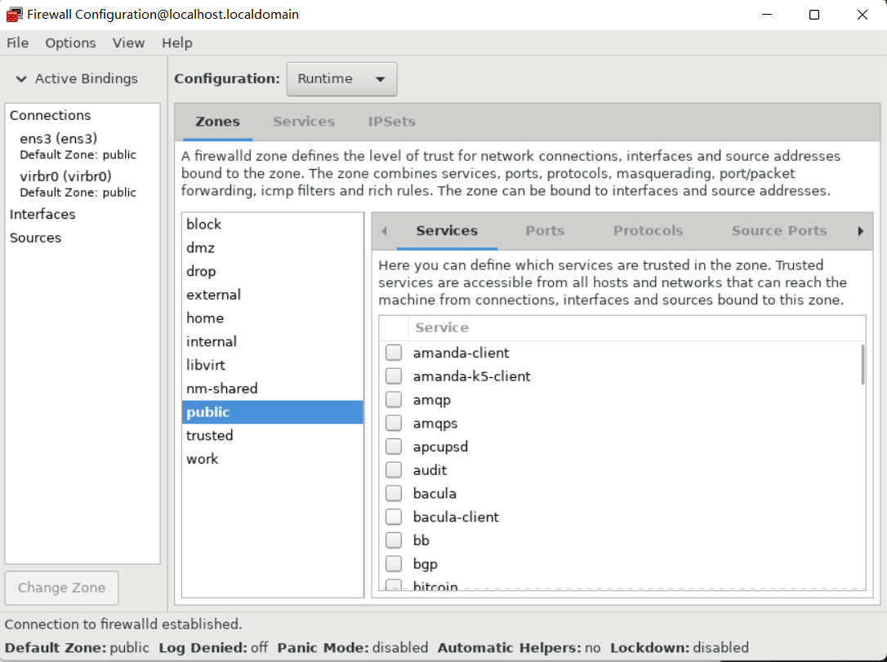

第49章 捕获网络数据包
要调试网络和通讯问题，您可以捕获网络数据包分析。以下部分提供有关捕获网络数据包的步骤和附加信息。
49.1.使用 xdpdump 捕获包括 XDP 程序丢弃的数据包在内的网络数据包
xdpdump 工具可以帮助我们捕获网络数据包。与 tcpdump 工具不同，xdpdump 使用扩展的 Berkeley 数据包过滤(eBPF)程序。这也使 xdpdump 能够捕获快速数据路径(XDP)程序丢弃的数据包。用户空间工具（如 tcpdump ）无法捕获被丢弃的数据包或是 XDP 程序修改的原始数据包。
您可以使用 xdpdump 来调试已附加到接口上的 XDP 程序。工作程序可以在 XDP 程序启动前或是程序结束后捕获数据包。在后一种情况下，xdpdump 也捕获 XDP 操作。默认情况下，xdpdump 会在 XDP 程序的入口处捕获传入的数据包。
请注意，xdpdump 没有数据包过滤或解码功能。但是，您可以将它与 tcpdump 结合使用来解码数据包。
以下流程描述了如何捕获 enp1s0 接口上的所有数据包，并将它们写入到 /root/capture.pcap 文件。
前提条件
- 安装了支持 XDP 程序的网络驱动程序。
- XDP 程序被加载到 enp1s0 接口。如果没有程序载入，xdpdump 会以与 tcpdump 类似的方式捕获数据包，以便向后兼容。
流程
-
要捕获 enp1s0 接口上的数据包，并将它们写入到 /root/capture.pcap 文件，请输入：
# xdpdump -i enp1s0 -w /root/capture.pcap -
要停止捕获数据包，请按 Ctrl+C。
第50章 使用和配置 firewalld
防火墙是保护机器不受来自外部的、不需要的网络数据的一种方式。它允许用户通过定义一组防火墙规则 来控制主机上的入站网络流量。这些规则用于对进入的流量进行排序，并可以阻断或允许流量。
firewalld 是一个防火墙服务守护进程，其提供一个带有 D-Bus 接口的、动态可定制的、基于主机的防火墙。因为是动态的，它不需要在每次修改规则后重启进程。
firewalld 使用域和服务的概念来简化流量管理。域 （zones） 是预定义的规则集。网络接口和源可以分配给域。流量是否允许进出取决于您计算机连接到的网络，和这个网络的安全级别。防火墙服务是预定义的规则，覆盖了允许进入特定服务的流量的所有必要设置，并在域中应用。
服务使用一个或多个端口或地址进行网络通信。防火墙会根据端口过滤通讯。要允许服务的网络流量通过，必须打开其端口。firewalld 会阻止未明确设置为开放的端口上的所有流量。一些域（如可信域）默认允许所有流量。
请注意，带有 nftables 后端的 firewalld 不支持使用 --direct 选项将自定义的 nftables 规则传递到 firewalld。
50.1.firewalld入门
50.1.1.使用 firewalld、nftables 或者 iptables
以下是您应该使用的工具简介：
- firewalld ：将 firewalld 工具用于简单的防火墙用例。此工具易于使用，并涵盖了这些场景的典型用例。
- nftables ：使用 nftables 工具来设置复杂和性能关键的防火墙，如整个网络。
- iptables ：iptables 工具使用 nf_tables 内核 API ，而不是 legacy 后端。nf_tables API 提供向后兼容性，因此使用 iptables 命令的脚本仍可在 OpenCloudOS 上工作。对于新的防火墙脚本，建议使用 nftables。
要避免不同的防火墙服务相互影响，请在主机中只使用一个服务，并禁用其他服务。
50.1.2. Zones
firewalld 可以根据用户在网络中的接口和流量上设置的信任级别将网络划分为不同的域。一个连接只能是一个域的一部分，但一个域可以被用来进行很多网络连接。
NetworkManager 通知接口域的 firewalld。您可以用以下工具为接口分配域：
- NetworkManager
- firewall-config 工具
- firewall-cmd 命令行工具
后两个只能编辑适当的 NetworkManager 配置文件。如果您使用 firewall-cmd 或 firewall-config 修改了接口域，那么请求会被转发到 NetworkManager，并且不会由 firewalld 来处理。
预定义域存储在 /usr/lib/firewalld/zones/ 目录中，并可立即应用到任何可用的网络接口上。只有在修改后，这些文件才会复制到 /etc/firewalld/zones/ 目录中。预定义域的默认设置如下：
- block 任何传入的网络连接都会被拒绝，对于 IPv4 会显示 icmp-host-prohibited 消息，对于 IPv6 会显示 icmp6-adm-prohibited 消息。只有从系统启动的网络连接才能进行。
- dmz 对于您的非企业化域里的计算机来说，这些计算机可以被公开访问，且有限访问您的内部网络。只接受所选的入站连接。
- drop 所有传入的网络数据包都会丢失，没有任何通知。只有外发网络连接是可行的。
- external 适用于启用了伪装的外部网络，特别是路由器。您不信任网络中的其他计算机不会损害您的计算机。只接受所选的入站连接。
- home 用于家用，因为您可以信任其他计算机。只接受所选的入站连接。
- internal 当您信任网络中的其他计算机时，供内部网络使用。只接受所选的入站连接。
- public 可用于您不信任网络中其他计算机的公共区域。只接受所选的入站连接。
- trusted 所有网络连接都被接受。
- work 可用于您主要信任网络中其他计算机的工作设置。只接受所选的入站连接。
这些域中的一个被设置为 default 域。当接口连接被添加到 NetworkManager 时，它们会被分配给默认域。安装时，firewalld 中的默认域被设置为 public 域。默认域可以被修改。
50.1.3.预定义的服务
服务可以是本地端口、协议、源端口和目的地列表，并在启用了服务时自动载入防火墙帮助程序模块列表。使用服务可节省用户时间，因为它们可以完成一些任务，如打开端口、定义协议、启用数据包转发等等，而不必在另外的步骤中设置所有任务。
服务通过单独的 XML 配置文件来指定，这些文件采用以下格式命名：service-name.xml 。协议名称优先于 firewalld 中的服务或应用程序名称。
可以使用图形化的 firewall-config 工具、firewall-cmd 和 firewall-offline-cmd 来添加和删除服务。
或者，您可以编辑 /etc/firewalld/services/ 目录中的 XML 文件。如果用户未添加或更改服务，则在 /etc/firewalld/services/ 中没有相应的 XML 文件。如果要添加或更改服务，/usr/lib/firewalld/services/ 目录中的文件可作用作模板。
50.1.4.启动 firewalld
流程
-
要启动 firewalld，请以 root 用户身份输入以下命令：
# systemctl unmask firewalld # systemctl start firewalld -
要确保 firewalld 在系统启动时自动启动，请以 root 用户身份输入以下命令：
# systemctl enable firewalld
50.1.5.禁用 firewalld
流程
-
要禁用 firewalld，请以 root 用户身份输入以下命令：
# systemctl stop firewalld -
要防止 firewalld 在系统启动时自动启动：
# systemctl disable firewalld -
要确保访问 firewalld D-Bus接口时未启动firewalld，并且其他服务需要 firewalld 时也未启动 firewalld ：
# systemctl mask firewalld
50.1.6.验证永久 firewalld 配置
在某些情况下，例如在手动编辑 firewalld 配置文件后，管理员想验证更改是否正确。本节描述了如何验证 firewalld 服务的永久配置。
前提条件
- firewalld 服务在运行。
流程
-
验证 firewalld 服务的永久配置：
如果永久配置有效，该命令将返回 成功。在其他情况下，命令返回一个带有更多详情的错误，如下所示：# firewall-cmd --check-config success# firewall-cmd --check-config Error: INVALID_PROTOCOL: 'public.xml': 'tcpx' not from {'tcp'|'udp'|'sctp'|'dcc
50.2.查看 firewalld的当前状态和设置
50.2.1.查看 firewalld 的当前状态
默认情况下，防火墙服务 firewalld 会在系统上安装。使用 firewalld CLI 接口可检查该服务是否正在运行。
流程
-
查看服务的状态：
# firewall-cmd --state -
如需有关服务状态的更多信息，请使用 systemctl status 子命令：
# systemctl status firewalld firewalld.service - firewalld - dynamic firewall daemon Loaded: loaded (/usr/lib/systemd/system/firewalld.service; enabled; vendor pr Active: active (running) since Mon 2017-12-18 16:05:15 CET; 50min ago Docs: man:firewalld(1) Main PID: 705 (firewalld) Tasks: 2 (limit: 4915) CGroup: /system.slice/firewalld.service └─705 /usr/bin/python3 -Es /usr/sbin/firewalld --nofork --nopid
50.2.2.使用 GUI 查看服务
要使用图形化的 firewall-config 工具来查看服务列表，请按 Super 键（也称 Win 键）进入"活动概览"，输入 firewall，然后按 Enter 键。firewall-config 工具就会出现。您可以在 Services 选项卡下查看服务列表。
您也可以使用命令行启动图形防火墙配置工具。
前提条件
- 已安装 firewall-config 软件包。
流程
-
使用命令行启动图形防火墙配置工具：
 firewall-config 窗口打开。请注意，这个命令可以以普通用户身份运行，但偶尔会提示您输入管理员密码。$ firewall-config
50.2.3.使用 CLI 查看 firewalld 设置
使用 CLI 客户端可能会看到和当前防火墙设置不同的视图。--list-all 选项显示 firewalld 设置的完整概述。
Firewalld 使用域来管理流量。如果没有用 --zone 选项来指定域，该命令将在分配给活跃网络接口和连接的默认域中有效。
流程
-
要列出默认域的所有相关信息：
# firewall-cmd --list-all public target: default icmp-block-inversion: no interfaces: sources: services: ssh dhcpv6-client ports: protocols: masquerade: no forward-ports: source-ports: icmp-blocks: rich rules: -
要指定显示设置的域，请在 firewall-cmd--list-all 命令中添加 --zone=zone-name 参数，例如：
# firewall-cmd --list-all --zone=home home target: default icmp-block-inversion: no interfaces: sources: services: ssh mdns samba-client dhcpv6-client ... [trimmed for clarity] -
要查看特定信息（如服务或端口）的设置，请使用特定选项。使用命令帮助来查看 firewalld 手册页或获取选项列表：
# firewall-cmd --help -
查看当前域中允许哪些服务：
# firewall-cmd --list-services ssh dhcpv6-client
注意，使用 CLI 工具列出某个子部分的设置有时会比较困难。例如，您允许 SSH 服务，firewalld 为该服务开放必要的端口(22)。之后，如果您列出允许的服务，列表将显示 SSH 服务，但如果列出开放的端口，则不会显示任何内容。因此，建议您使用 --list-all 选项来确保您收到完整的信息。
50.3.使用 firewalld 控制网络流量
50.3.1.使用 CLI 禁用紧急事件的所有流量
在紧急情况下，如受到系统攻击，可以禁用所有网络流量来切断攻击者的流量。
流程
-
要立即禁用网络流量，请切换到 panic 模式：
注意，启用 panic 模式可停止所有网络流量。因此，只有当您具有对机器的物理访问权限或使用串行控制台登录时，才应该使用它。# firewall-cmd --panic-on -
关闭 panic 模式会使该设置自动设为防火墙的永久设置。要关闭 panic 模式，请输入：
# firewall-cmd --panic-off
验证
-
要查看是否打开或关闭 panic 模式，请使用：
# firewall-cmd --query-panic
50.3.2.使用 CLI 控制预定义服务的流量
控制流量的最简单的方法是向 firewalld 添加预定义的服务。这会打开所有必需的端口并根据 服务定义文件 修改其他设置。
流程
-
检查该服务是否还未被允许：
# firewall-cmd --list-services ssh dhcpv6-client -
列出所有预定义的服务：
# firewall-cmd --get-services RH-Satellite-6 amanda-client amanda-k5-client bacula bacula-client bitcoin bitcoin-rpc bitcoin-testnet bitcoin-testnet-rpc ceph ceph-mon cfengine condor-collector ctdb dhcp dhcpv6 dhcpv6-client dns docker-registry ... [trimmed for clarity] -
添加允许的服务：
# firewall-cmd --add-service=<service-name> -
使新设置持久：
# firewall-cmd --runtime-to-permanent
50.3.3.通过 GUI，使用预定义服务控制流量
前提条件
- 已安装 firewall-config 软件包
流程
-
启用或禁用预定义或自定义服务：
-
启动 firewall-config 工具并选择要配置的服务的网络域。
- 选择 Zones 选项卡，然后选择下面的 Services 选项卡。
-
选择您要信任的每种服务类型的复选框，或者清除复选框以阻止所选区中的服务。
-
编辑服务：
-
启动 firewall-config 工具。
- 从标为 Configuration 的菜单中选择 Permanent 。其它图标和菜单按钮会出现在 Service 窗口底部。
- 选择您要配置的服务。
Ports 、Protocols 和 Source Port 选项卡可为所选的服务启用、更改和删除端口、协议和源端口。模块标签是用来配置 Netfilter helper 模块。Destination 选项卡允许将流量限制到特定的目标地址和Internet协议(IPv4 或 IPv6)。
注意，在Runtime 模式下无法更改服务设置。
50.3.4.添加新服务
您可以使用图形化的 firewall-config 工具、firewall-cmd 和 firewall-offline-cmd 来添加和删除服务。或者，您可以编辑 /etc/firewalld/services/ 中的 XML 文件。如果用户未添加或更改服务，则在 /etc/firewalld/services/ 中没有相应的 XML 文件。如果要添加或更改服务，则文件 /usr/lib/firewalld/services/ 可用作模板。
注意，服务名称必须是字母数字，此外只能包含 _ （下划线）和 - （短划线）字符。
流程
要在终端中添加新服务，请使用 firewall-cmd 或在 firewalld 未激活的情况下，使用firewall-offline-cmd 。
-
运行以下命令以添加新和空服务：
$ firewall-cmd --new-service=service-name --permanent -
要使用本地文件添加新服务，请使用以下命令：
您可以使用 --name=service-name 选项来更改服务名称。$ firewall-cmd --new-service-from-file=service-name.xml --permanent -
更改服务设置后，服务的更新副本放在 /etc/firewalld/services/ 中。
作为 root 用户，您可以输入以下命令来手动复制服务：
firewalld 首先从 /usr/lib/firewalld/services 加载文件。如果文件放在 /etc/firewalld/services 中，并且有效，则这些文件将覆盖 /usr/lib/firewalld/services 中的匹配文件。一旦删除了 /etc/firewalld/services 中的匹配文件，或者要求 firewalld 加载服务的默认值，就会使用 /usr/lib/firewalld/services 中的覆盖文件。这只适用于永久性环境。要在运行时环境中获取这些回退，则需要重新载入。# cp /usr/lib/firewalld/services/service-name.xml /etc/firewalld/services/service-name.xml
50.3.5.使用 GUI 打开端口
如果您要允许流量通过防火墙到达某个端口，可以在 GUI 中打开端口。
前提条件
- 已安装 firewall-config 软件包
流程
- 启动 firewall-config 工具并选择要更改的网络区。
- 选择 Ports 选项卡，然后点击右侧的 Add 按钮。此时会打开 端口和协议 窗口。
- 输入要允许的端口号或者端口范围。
- 从列表中选择 tcp 或 udp。
50.3.6.使用 GUI 控制协议的流量
您可以使用 GUI 控制某种协议允许流量通过防火墙。
前提条件
- 已安装 firewall-config 软件包
流程
- 启动 firewall-config 工具并选择要更改的网络区。
- 选择 Protocols 选项卡，然后点击右侧的 Add 按钮。此时会打开 协议 窗口。
- 从列表中选择协议，或者选择 Other Protocol 复选框，并在字段中输入协议。
50.3.7.使用 GUI 打开源端口
要允许来自某个端口的流量通过防火墙，您可以使用 GUI。
前提条件
- 已安装 firewall-config 软件包
流程
- 启动 firewall-config 工具并选择要更改的网络区。
- 选择 Source Port 选项卡，然后点击右侧的 Add 按钮。源端口 窗口将打开。
- 输入要允许的端口号或者端口范围。从列表中选择 tcp 或 udp。
50.4.使用 CLI 控制端口
端口是可让操作系统接收和区分网络流量并将其转发到系统服务的逻辑设备。它们通常由侦听端口的守护进程来表示，它会等待到达这个端口的任何流量。
通常，系统服务会为它们保留标准的侦听端口。例如，httpd 守护进程监听 80 端口。但默认情况下，系统管理员会将守护进程配置为在不同端口上侦听以便增强安全性或其他原因。
50.4.1.打开端口
通过打开端口，系统可被从外部访问，这代表了安全风险。通常让端口保持关闭，且只在某些服务需要时才打开。
流程
要获得当前区的打开端口列表：
-
列出所有允许的端口：
# firewall-cmd --list-ports -
在允许的端口中添加一个端口，以便为入站流量打开这个端口：
端口类型为 tcp、udp、sctp 或 dccp。这个类型必须与网络通信的类型匹配。# firewall-cmd --add-port=port-number/port-type -
使新设置具有持久性：
端口类型为 tcp、udp、sctp 或 dccp。这个类型必须与网络通信的类型匹配。# firewall-cmd --runtime-to-permanent
50.4.2.关闭端口
当打开的端口不再需要时，在 firewalld 中关闭此端口。强烈建议您尽快关闭所有不必要的端口，因为端口处于打开状态会存在安全隐患。
流程
要关闭某个端口，请将其从允许的端口列表中删除：
-
列出所有允许的端口：
注意，这个命令只为您提供已打开作为端口的端口列表。您将无法看到作为服务打开的任何打开端口。因此，您应该考虑使用 --list-all 选项查看详细信息，而不是 --list-ports。# firewall-cmd --list-ports -
从允许的端口中删除端口，以便对传入的流量关闭：
# firewall-cmd --remove-port=port-number/port-type -
使新设置具有持久性：
# firewall-cmd --runtime-to-permanent
50.5.使用 system-roles 配置端口
您可以使用 firewalld 系统角色来在本地防火墙中为传入的流量打开或关闭端口，并使配置在重启后保持不变。以下示例描述了如何配置默认域以允许 HTTPS 服务的传入流量。
在 Ansible 控制节点上运行此步骤。
前提条件
- 拥有对一个或多个受管节点的访问等权限，这些节点是您要使用 firewalld 系统角色配置的系统。
- 拥有对控制节点的访问等权限，控制节点是 Ansible Engine 配置其他系统的主机。
- ansible 和 rhel-system-roles 软件包已安装在控制节点上。
- 如果您在运行 playbook 时使用了与 root 不同的远程用户，则此用户在受管节点上具有适当的 sudo 权限。
- 主机使用 NetworkManager 配置网络。
流程
-
如果要在其上执行 playbook 中指令的主机还没有被列入清单，请将此主机的 IP 或名称添加到 /etc/ansible/hosts Ansible 清单文件中：
node.example.compermanent: true 选项可使新设置在重启后保持不变。2. 使用以下内容创建 ~/adding-and-removing-ports.yml playbook： --- - name: Allow incoming HTTPS traffic to the local host hosts: node.example.com become: true tasks: - include_role: name: linux-system-roles.firewall vars: firewall: - port: 443/tcp service: http state: enabled runtime: true permanent: true -
运行 playbook：
- 要以 root 用户身份连接到受管主机，请输入：
# ansible-playbook -u root ~/adding-and-removing-ports.yml- 以用户身份连接到受管主机，请输入：
--ask-become-pass 选项可确保 ansible-playbook 命令提示输入 -u user_name 选项中定义的用户的 sudo 密码。# ansible-playbook -u user_name --ask-become-pass ~/adding-and-removing-ports.yml
如果没有指定 -u user_name 选项，ansible-playbook 以当前登录到控制节点的用户身份连接到受管主机。
验证
-
连接到受管节点：
$ ssh user_name@node.example.com -
验证与 HTTPS 服务关联的 443/tcp 端口是否打开：
$ sudo firewall-cmd --list-ports 443/tcp
50.6.使用 firewalld 域
zones 代表一种更透明管理传入流量的概念。这些区域会连接到联网接口或者分配一系列源地址。您可以独立为每个域管理防火墙规则，这样就可以定义复杂的防火墙设置并将其应用到流量传输中。
50.6.1.列出防火墙域
流程
-
查看系统中有哪些可用区：
firewall-cmd --get-zones 命令显示系统上所有可用的域，但不显示特定域的任何详情。# firewall-cmd --get-zones -
查看所有域的详细信息：
# firewall-cmd --list-all-zones -
查看特定域的详细信息：
# firewall-cmd --zone=zone-name --list-all
50.6.2.更改特定域的 firewalld 设置
流程
-
要在不同的域中工作，请使用 --zone=zone-name 选项。例如，允许在域 public 中使用 SSH 服务：
# firewall-cmd --add-service=ssh --zone=public
50.6.3.更改默认域
系统管理员在其配置文件中为网络接口分配区域。如果接口没有被分配给指定域，它将被分配给默认域。每次重启 firewalld 服务后，firewalld 加载默认域的设置，使其处于活动状态。
流程
设置默认域：
-
显示当前的默认域：
# firewall-cmd --get-default-zone -
设置新的默认区：
# firewall-cmd --set-default-zone zone-name
注意，此流程设置是永久设置，即使没有 --permanent 选项。
50.6.4.将网络接口分配给域
您可以为不同域定义不同的规则集，然后通过更改所使用的接口的域来快速改变设置。使用多个接口，可以为每个具体域设置一个域来区分通过它们的网络流量。
流程
要将域分配给特定的接口：
-
列出活跃区以及分配给它们的接口：
# firewall-cmd --get-active-zones -
为不同的区分配接口：
# firewall-cmd --zone=zone_name --change-interface=interface_name --permanent
50.6.5.使用 nmcli 为连接分配区域
以下流程描述了如何使用 nmcli 工具将 firewalld 区添加到 NetworkManager 连接中。
流程
-
将域分配到 NetworkManager 连接配置文件：
# nmcli connection modify profile connection.zone zone_name -
激活连接：
# nmcli connection up profile
50.6.6.在 ifcfg 文件中手动将区分配给网络连接
当连接由 网络管理器（NetworkManager）管理时，必须了解它在哪个区域使用。为每个网络连接指定区域，则根据计算机有可移植设备的位置提供各种防火墙设置，体现了配置的灵活性。因此，可以为不同的场合指定防火墙域和设置。
流程
-
要为连接设置域，请编辑 /etc/sysconfig/network-scripts/ifcfg-connection_name 文件，并添加一行，将区分配给这个连接：
ZONE=zone_name
50.6.7.创建一个新域
要使用自定义域，可以创建一个新的域并像预定义域一样使用它。新域需要 --permanent 选项，否则 命令不起作用。
流程
-
创建一个新域：
# firewall-cmd --permanent --new-zone=zone-name -
检查是否在您的永久设置中添加了新的区：
# firewall-cmd --get-zones -
使新设置具有持久性：
# firewall-cmd --runtime-to-permanent
50.6.8.域配置文件
域也可以通过域配置文件创建。如果您需要创建新域，但想从不同域重复使用设置，这种方法就很有用了。
firewalld 域配置文件包含域的信息。分别是域的描述、服务、端口、协议、icmp-blocks、masquerade、forward-ports 和丰富的语言规则，采用 XML 文件格式存储。文件名必须是 zone-name.xml，其中 zone-name 的长度目前限制为 17 个字符。域配置文件位于 /usr/lib/firewalld/zones/ 和 /etc/firewalld/zones/ 目录中。
以下示例显示了允许一个服务(SSH)和一个端口范围的配置，适用于 TCP 和 UDP 协议：
```
<?xml version="1.0" encoding="utf-8"?>
<zone>
<short>My Zone</short>
<description>Here you can describe the characteristic features of the zone.</description>
<service name="ssh"/>
<port protocol="udp" port="1025-65535"/>
<port protocol="tcp" port="1025-65535"/>
</zone>
```
要更改那个域的设置，请添加或者删除相关的部分来添加端口、转发端口、服务等等。
50.6.9.使用域目标设定传入流量的默认行为
对于每个域，您可以设置一种处理尚未进一步确定的传入流量的默认行为。此行为是通过设置域的目标来定义的。有四个选项：
- ACCEPT ：接受除特定规则不允许的所有传入的数据包。
- REJECT ：拒绝除特定规则允许的所有传入的数据包。当 firewalld 拒绝数据包时，会告知源机器有关拒绝的信息。
- DROP ：丢弃除特定规则允许的所有传入的数据包。当 firewalld 丢弃数据包时，不会告知源机器有关丢弃数据包的信息。
- default ：与 REJECT 的行为类似，但在某些情况下具有特殊含义。详情请查看 firewall-cmd(1) 手册页中的 适应和查询区和策略的选项 部分。
流程
为域设置目标：
-
列出特定区的信息以查看默认目标：
# firewall-cmd --zone=zone-name --list-all -
在区中设置一个新目标：
# firewall-cmd --permanent --zone=zone-name --set-target=<default|ACCEPT|REJEC
50.7.根据源使用区管理传入流量
您可以使用域根据其源管理传入的流量。这可让您对进入的流量进行分类，并将其路由到不同的域，以允许或禁止该流量可访问的服务。
如果您给域添加一个源，域就会成为活跃的，来自该源的所有进入流量都会被定向到它。您可以为每个域指定不同的设置，这些设置相应地应用于来自给定源的网络流量。即使只有一个网络接口，您也可以使用多个域。
50.7.1.添加源
要将传入的流量路由到特定域，请将源添加到那个区。源可以是一个使用 CIDR 格式的 IP 地址或 IP 掩码。
注意，如果您添加多个带有重叠网络范围的域，则根据域名称排序，且只考虑第一个域。
-
在当前区中设置源：
# firewall-cmd --add-source=<source> -
要为特定区设置源 IP 地址：
以下流程允许来自受信任域中 192.168.2.15 的所有传入的流量：# firewall-cmd --zone=zone-name --add-source=<source>
流程
-
列出所有可用域：
# firewall-cmd --get-zones -
将源 IP 添加到持久性模式的信任区中：
# firewall-cmd --zone=trusted --add-source=192.168.2.15 -
使新设置具有持久性：
# firewall-cmd --runtime-to-permanent
50.7.2.删除源
从域中删除源会关闭来自它的网路流量
流程
-
列出所需区的允许源：
# firewall-cmd --zone=zone-name --list-sources -
从区永久删除源：
# firewall-cmd --zone=zone-name --remove-source=<source> -
使新设置具有持久性：
# firewall-cmd --runtime-to-permanent
50.7.3.添加源端口
要启用基于源端口的流量排序，请使用 --add-source-port 选项来指定源端口。您还可以将其与 --add-source 选项结合使用，将流量限制在某个 IP 地址或 IP 范围。
流程
-
添加源端口：
# firewall-cmd --zone=zone-name --add-source-port=<port-name>/<tcp|udp|sctp|dccp>
50.7.4.删除源端口
通过删除源端口，您可以根据原始端口禁用对流量排序。
流程
-
要删除源端口：
# firewall-cmd --zone=zone-name --remove-source-port=<port-name>/<tcp|udp|sctp|dccp>
50.7.5.使用 区（zones） 和源来配置一个服务只适用于一个特定的域（domain）
要允许特定网络的流量在机器上使用服务，请使用区和源。以下流程只允许来自 192.0.2.0/24 网络的 HTTP 流量，而任何其他流量都被阻止。
注意，配置此场景时，请使用具有默认目标的区。使用将目标设为 ACCEPT 的区存在安全风险，因为对于来自 192.0.2.0/24 的流量，所有网络连接都将被接受。
流程
-
列出所有可用区：
# firewall-cmd --get-zones block dmz drop external home internal public trusted work -
将 IP 范围添加到 internal 区，以将来自源的流量路由到区：
# firewall-cmd --zone=internal --add-source=192.0.2.0/24 -
将http 服务添加到 internal 区中：
# firewall-cmd --zone=internal --add-service=http -
使新设置具有持久性：
# firewall-cmd --runtime-to-permanent
验证
-
检查 internal 区是否处于活跃状态，以及该区中是否允许服务：
# firewall-cmd --zone=internal --list-all internal (active) target: default icmp-block-inversion: no interfaces: sources: 192.0.2.0/24 services: cockpit dhcpv6-client mdns samba-client ssh http ...
50.8.在区域间过滤转发的流量
通过使用策略对象，用户可以对策略中需要类似权限的不同身份进行分组。您可以根据流量的方向使用策略。
策略对象功能在 firewalld 中提供转发和输出过滤。以下描述了使用 firewalld 来过滤不同区域之间的流量，以允许访问本地托管的虚拟机来连接主机。
50.8.1.策略对象和区域之间的关系
策略对象允许用户将 firewalld 的原语（如服务、端口和丰富的规则）附加到策略上。您可以将策略对象应用到以有状态和单向的方式在区域间传输的流量上。
```
# firewall-cmd --permanent --new-policy myOutputPolicy
# firewall-cmd --permanent --policy myOutputPolicy --add-ingress-zone HOST
# firewall-cmd --permanent --policy myOutputPolicy --add-egress-zone ANY
```
HOST 和 ANY 是 ingress 和 egress 区域列表中使用的符号区域。
- HOST 符号区域对于来自运行 firewalld 的主机的流量，或具有到运行 firewalld 的主机的流量允许策略。
- ANY 符号区对所有当前和将来的区域应用策略。ANY 符号区域充当所有区域的通配符。
50.8.2. 使用优先级对策略进行排序
多个策略可以应用到同一组流量，因此应使用优先级为可能应用的策略创建优先级顺序。
要设置优先级来对策略进行排序：
```
# firewall-cmd --permanent --policy mypolicy --set-priority -500
```
在上例中，-500 是较低的优先级值，但具有较高的优先级。因此，-500 将在 -100 之前执行。较高的优先级级值优先于较低的优先级级值。
以下规则适用于策略优先级：
- 具有负优先级的策略在区域中的规则之前应用。
- 具有正优先级的策略在区域中的规则之后应用。
- 优先级 0 被保留，因此不能使用。
50.8.3. 使用策略对象来过滤本地托管容器与主机物理连接的网络之间的流量
策略对象功能允许用户过滤其容器和虚拟机流量。
流程
-
创建新策略。
# firewall-cmd --permanent --new-policy podmanToHost -
阻止所有流量。
# firewall-cmd --permanent --policy podmanToHost --set-target REJECT # firewall-cmd --permanent --policy podmanToHost --add-service dhcp # firewall-cmd --permanent --policy podmanToHost --add-service dns -
定义与策略一起使用的 ingress 区域。
# firewall-cmd --permanent --policy podmanToHost --add-ingress-zone podman -
定义与策略一起使用的 egress 区域。
# firewall-cmd --permanent --policy podmanToHost --add-egress-zone ANY
验证
-
验证关于策略的信息。
# firewall-cmd --info-policy podmanToHost
50.8.4. 设置策略对象的默认目标
您可以为策略指定 --set-target 选项。可用的参数如下：
- ACCEPT - 接受数据包
- DROP - 丢弃不需要的数据包
- REJECT - 拒绝不需要的数据包，并带有 ICMP 回复
-
CONTINUE （默认） - 数据包将遵循以下策略和区域中的规则。
# firewall-cmd --permanent --policy mypolicy --set-target CONTINUE
验证
-
验证有关策略的信息
# firewall-cmd --info-policy mypolicy
50.9. 使用 firewalld 配置 NAT
使用 firewalld，您可以配置以下网络地址转换(NAT)类型：
- 伪装
- 源 NAT（SNAT）
- 目标 NAT（DNAT）
- 重定向
50.9.1. 不同的 NAT 类型： masquerading、source NAT、destination NAT 和 redirect
这些是不同的网络地址转换（NAT）类型：
-
伪装和源 NAT（SNAT） 使用以上 NAT 类型之一更改数据包的源 IP 地址。例如，互联网服务提供商不会路由私有 IP 范围，如 10.0.0.0/8。如果您在网络中使用私有 IP 范围，并且用户应该能够访问 Internet 上的服务器，请将这些范围内的数据包的源 IP 地址映射到公共 IP 地址。
伪装和 SNAT 都非常相似。不同之处是：
- 伪装自动使用传出接口的 IP 地址。因此，如果传出接口使用了动态 IP 地址，则使用伪装。
- SNAT 将数据包的源 IP 地址设置为指定的 IP 地址，且不会动态查找传出接口的 IP 地址。因此，SNAT 要比伪装更快。如果传出接口使用了固定 IP 地址，则使用 SNAT。
-
目标 NAT（DNAT） 使用此 NAT 类型重写传入数据包的目标地址和端口。例如，如果您的 Web 服务器使用私有 IP 范围内的 IP 地址，那么无法直接从互联网访问它，您可以在路由器上设置 DNAT 规则，以便将传入的流量重定向到此服务器。
-
重定向 这个类型是 IDT 的特殊示例，它根据链 hook 将数据包重定向到本地机器。例如，如果服务运行在与其标准端口不同的端口上，您可以将传入的流量从标准端口重定向到此特定端口。
50.9.2. 配置 IP 地址伪装
以下流程描述了如何在系统中启用 IP 伪装。IP 伪装会在访问互联网时隐藏网关后面的独立机器。
流程
-
要检查是否启用了 IP 伪装（例如，对于 external 区），以 root 用户身份输入以下命令：
如果已启用，命令将会打印 yes，且退出状态为 0。否则，将打印 no ，且退出状态为 1。如果省略了 zone，则将使用默认区。# firewall-cmd --zone=external --query-masquerade -
要启用 IP 伪装，请以 root 用户身份输入以下命令：
# firewall-cmd --zone=external --add-masquerade -
要使此设置持久，请将 --permanent 选项传给命令。
-
要禁用 IP 伪装，请以 root 身份输入以下命令：
要使此设置永久生效，请将 --permanent 选项传给命令。# firewall-cmd --zone=external --remove-masquerade
50.10. 端口转发
使用此方法重定向端口只可用于基于 IPv4 的流量。对于 IPv6 重定向设置，您必须使用丰富的规则。
要重定向到外部系统，需要启用伪装。您无法通过主机上配置了本地转发的重定向端口访问服务。
50.10.1. 添加一个端口来重定向
使用 firewalld ，您可以设置端口重定向，以便任何到达您系统上特定端口的流量都会被传送到您选择的另一个内部端口或另一台机器上的外部端口。
前提条件
- 在您将从一个端口的流量重新指向另一个端口或另一个地址前，您必须了解 3 个信息：数据包到达哪个端口，使用什么协议，以及您要重定向它们的位置。
流程
-
将端口重新指向另一个端口：
# firewall-cmd --add-forward-port=port=port-number:proto=tcp|udp|sctp|dccp:toport=port-number -
将端口重定向到不同 IP 地址的另一个端口：
-
添加要转发的端口：
# firewall-cmd --add-forward-port=port=port-number:proto=tcp|udp:toport=port-number:toaddr=IP -
启用伪装：
# firewall-cmd --add-masquerade
-
50.10.2. 将 TCP 端口 80 重定向到同一台机器中的 88 端口
按照以下步骤将 TCP 端口 80 重定向到端口 88。
流程
-
将端口 80 重定向到 TCP 流量的端口 88:
# firewall-cmd --add-forward-port=port=80:proto=tcp:toport=88 -
使新设置具有持久性：
# firewall-cmd --runtime-to-permanent -
检查是否重定向了端口：
# firewall-cmd --list-all
50.10.3. 删除重定向的端口
这个步骤描述了如何删除重定向的端口。
流程
-
要删除重定向的端口：
# firewall-cmd --remove-forward-port=port=port-number:proto=<tcp|udp>:toport=port-number:toaddr=<IP> -
要删除重定向到不同地址的转发端口：
- 删除转发的端口：
# firewall-cmd --remove-forward-port=port=port-number:proto=<tcp|udp>:toport=port-number:toaddr=<IP>- 禁用伪装：
# firewall-cmd --remove-masquerade
50.10.4. 在同一台机器上将 TCP 端口 80 转发到端口 88
这个步骤描述了如何删除端口重定向。
流程
-
列出重定向的端口：
# firewall-cmd --list-forward-ports port=80:proto=tcp:toport=88:toaddr= -
从防火墙中删除重定向的端口：
# firewall-cmd --remove-forward-port=port=80:proto=tcp:toport=88:toaddr= -
使新设置具有持久性：
# firewall-cmd --runtime-to-permanent
50.11. 管理 ICMP 请求
Internet 控制消息协议 (ICMP)是一种支持协议，供各种网络设备用来发送错误消息和表示连接问题的操作信息，例如，请求的服务不可用。ICMP 与 TCP 和 UDP 等传输协议不同，因为它不用于在系统之间交换数据。
不幸的是，可以使用 ICMP 消息（特别是 echo-request 和 echo-reply ）来揭示关于您网络的信息，并将这些信息滥用于各种欺诈活动。因此，firewalld 允许阻止 ICMP 请求，来保护您的网络信息。
50.11.1. 列出和阻塞 ICMP 请求
列出 ICMP 请求
位于 /usr/lib/firewalld/icmptypes/ 目录中的单独的 XML 文件描述了 ICMP 请求。您可以阅读这些文件来查看请求的描述。firewall-cmd 命令控制 ICMP 请求操作。
-
要列出所有可用的 ICMP 类型：
# firewall-cmd --get-icmptypes -
IPv4、IPv6 或这两种协议都可以使用 ICMP 请求。要查看 ICMP 请求使用了哪种协议：
# firewall-cmd --info-icmptype=<icmptype> -
如果请求当前被阻止了，则 ICMP 请求的状态显示为 yes ，如果没有被阻止，则显示为 no。查看 ICMP 请求当前是否被阻断了：
# firewall-cmd --query-icmp-block=<icmptype>
阻止或取消阻止 ICMP 请求
当您的服务器阻止了 ICMP 请求时，它不会提供任何通常会提供的信息。但这并不意味着根本不给出任何信息。客户端会收到特定的 ICMP 请求被阻止（拒绝）的信息。应仔细考虑阻止 ICMP 请求，因为它可能会导致通信问题，特别是与 IPv6 流量有关的通信问题。
-
要查看 ICMP 请求当前是否被阻断了：
# firewall-cmd --query-icmp-block=<icmptype> -
要阻止 ICMP 请求：
# firewall-cmd --add-icmp-block=<icmptype> -
要删除 ICMP 请求的块：
# firewall-cmd --remove-icmp-block=<icmptype>
在不提供任何信息的情况下阻塞 ICMP 请求
通常，如果您阻止了 ICMP 请求，客户端会知道您阻止了 ICMP 请求。这样潜在的攻击者仍然可以看到您的 IP 地址在线。要完全隐藏此信息，您必须丢弃所有 ICMP 请求。
- 要阻止和丢弃所有 ICMP 请求：
-
将区的目标设为 DROP ：
现在，除您明确允许的流量外，所有流量（包括 ICMP 请求）都将被丢弃。# firewall-cmd --permanent --set-target=DROP
阻止和丢弃某些 ICMP 请求，而允许其他的请求：
-
将区的目标设为 DROP ：
# firewall-cmd --permanent --set-target=DROP -
添加 ICMP block inversion 以一次阻止所有 ICMP 请求：
# firewall-cmd --add-icmp-block-inversion -
为您要允许的 ICMP 请求添加 ICMP 块：
# firewall-cmd --add-icmp-block=<icmptype> -
使新设置具有持久性：
# firewall-cmd --runtime-to-permanent
block inversion 会颠倒 ICMP 请求块的设置，因此所有之前没有被阻止的请求都会被阻止，因为区的目标变成了 DROP。被阻断的请求不会被阻断。这意味着，如果您想要取消阻塞请求，则必须使用 blocking 命令。
将块 inversion 恢复到完全 permissive 设置：
-
将区的目标设置为 default 或 ACCEPT:
# firewall-cmd --permanent --set-target=default -
删除 ICMP 请求的所有添加的块：
# firewall-cmd --remove-icmp-block=<icmptype> -
删除 ICMP block inversion：
# firewall-cmd --remove-icmp-block-inversion -
使新设置具有持久性：
# firewall-cmd --runtime-to-permanent
50.11.2. 使用 GUI 配置 ICMP 过滤器
- 要启用或禁用 ICMP 过滤器，请启动 firewall-config 工具,并选择其消息要被过滤的网络区。选择 ICMP Filter 选项卡，再选中您要过滤的每种 ICMP 消息的复选框。清除复选框以禁用过滤器。这个设置按方向设置，默认允许所有操作。
- 若要启用反向 ICMP Filter，可点击右侧的 Invert Filter 复选框。现在只接受标记为 ICMP 的类型，所有其他的均被拒绝。在使用 DROP 目标的区域里它们会被丢弃。
50.12. 使用 firewalld 设置和控制 IP 集
要查看 firewalld 所支持的 IP 集设置类型列表，请以 root 用户身份输入以下命令。
```
# firewall-cmd --get-ipset-types
hash:ip hash:ip,mark hash:ip,port hash:ip,port,ip hash:ip,port,net hash:mac hash:net hash:net,iface hash:net,net hash:net,port hash:net,port,net
```
50.12.1. 使用 CLI 配置 IP 设置选项
IP 集可以在 firewalld 区中用作源，也可以用作富规则中的源。在 Red Hat Enterprise Linux 中，首选的方法是使用 firewalld 在直接规则中创建的 IP 集合。
-
要列出 permanent 环境中 firewalld 已知的 IP 集，请以 root 用户身份运行以下命令：
# firewall-cmd --permanent --get-ipsets -
要添加新的 IP 集，请以 root 用户身份使用 permanent 环境来运行以下命令：
# firewall-cmd --permanent --new-ipset=test --type=hash:net success
上述命令为 IPv4 创建了一个名为 test ， 类型为 hash:net 的新的 IP 集。要创建用于 IPv6 的 IP 集，请添加 --option=family=inet6 选项。要使新设置在运行时环境中有效，请重新加载 firewalld。
-
使用以下命令，以 root 用户身份列出新的 IP 集：
# firewall-cmd --permanent --get-ipsets test -
要获取有关 IP 集的更多信息，请以 root 用户身份运行以下命令：
请注意，IP 集目前没有任何条目。# firewall-cmd --permanent --info-ipset=test test type: hash:net options: entries: -
要在 test IP 集中添加一个条目，请以 root 用户身份运行以下命令：
前面的命令将 IP 地址 192.168.0.1 添加到 IP 集合中。# firewall-cmd --permanent --ipset=test --add-entry=192.168.0.1 success -
要获取 IP 集中的当前条目列表，请以 root 用户身份运行以下命令：
# firewall-cmd --permanent --ipset=test --get-entries 192.168.0.1 -
生成包含 IP 地址列表的文件，例如：
包含 IP 集合 IP 地址列表的文件应该每行包含一个条目。以 hash、分号或空行开头的行将被忽略。# cat > iplist.txt <<EOL 192.168.0.2 192.168.0.3 192.168.1.0/24 192.168.2.254 EOL -
要添加 iplist.txt 文件中的地址，请以 root 用户身份运行以下命令：
# firewall-cmd --permanent --ipset=test --add-entries-from-file=iplist.txt success -
要查看 IP 集的扩展条目列表，请以 root 用户身份运行以下命令：
# firewall-cmd --permanent --ipset=test --get-entries 192.168.0.1 192.168.0.2 192.168.0.3 192.168.1.0/24 192.168.2.254 -
要从 IP 集中删除地址，并检查更新的条目列表，请以 root 用户身份运行以下命令：
# firewall-cmd --permanent --ipset=test --remove-entries-from-file=iplist.txt success # firewall-cmd --permanent --ipset=test --get-entries 192.168.0.1 -
您可以将 IP 集合作为一个源添加到区，以便处理所有来自 IP 集合中列出的任意地址的网络流量。例如，要将 test IP 集作为源添加到 drop 区域，以便丢弃来自 test IP 集中列出的所有条目的所有数据包，请以 root 用户身份运行以下命令 ：
源中的 ipset: 前缀显示 firewalld 的源是一个 IP 集，而不是 IP 地址或地址范围。# firewall-cmd --permanent --zone=drop --add-source=ipset:test success
IP 集的创建和删除只限于 permanent 环境，所有其他 IP 集选项也可以用在运行时环境中，而不需要 --permanent 选项。
不推荐使用不是通过 firewalld 管理的 IP 集。要使用这样的 IP 组，需要一个永久直接规则来引用集合，且必须添加自定义服务来创建这些 IP 组件。这个服务需要在 firewalld 启动前启动，否则 firewalld 无法使用这些集合来添加直接规则。您可以使用 /etc/firewalld/direct.xml 文件来添加永久的直接规则。
50.13. 丰富规则的优先级
默认情况下，富规则是根据其规则操作进行组织的。例如，deny 规则优先于 allow 规则。富规则中的 priority 参数可让管理员对富规则及其执行顺序进行精细的控制。
50.13.1. priority 参数如何将规则组织为不同的链
您可以将富规则中的 priority 参数设置为 -32768 和 32767 之间的任意数字，值越小优先级越高。
firewalld 服务会根据其优先级的值将规则组织到不同的链中：
- 优先级低于 0：规则被重定向到带有 _pre 后缀的链中。
- 优先级高于 0：规则被重定向到带有 _post 后缀的链中。
- 优先级等于 0：根据操作，规则将重定向到带有 _log、_deny 或 _allow 的链中。
在这些子链中，firewalld 会根据其优先级的值对规则进行排序。
50.13.2. 设置丰富的规则的优先级
该流程描述了如何创建一个富规则的示例，该规则使用 priority 参数来记录其他规则不允许或拒绝的所有流量。您可以使用此规则标记意非预期的流量。
流程
-
添加一个带有非常低优先级的丰富规则来记录未由其他规则匹配的所有流量：
命令还将日志条目的数量限制为每分钟 5 个。# firewall-cmd --add-rich-rule='rule priority=32767 log prefix="UNEXPECTED: " limit value="5/m"' -
另外，还可显示上一步中命令创建的 nftables 规则：
# nft list chain inet firewalld filter_IN_public_post table inet firewalld { chain filter_IN_public_post { log prefix "UNEXPECTED: " limit rate 5/minute } }
50.14. 配置防火墙锁定
如果本地应用或服务以 root 身份运行（如 libvirt），则可以更改防火墙配置。使用这个特性，管理员可以锁定防火墙配置，从而达到没有应用程序或只有添加到锁定白名单中的应用程序可以请求防火墙更改的目的。锁定设置默认会被禁用。如果启用，用户就可以确定，防火墙没有被本地的应用程序或服务进行了不必要的配置更改。
50.14.1. 使用 CLI 配置锁定
这个流程描述了如何使用命令行来启用或禁用锁定。
-
要查询是否启用了锁定，请以 root 用户身份运行以下命令：
如果启用了锁定，该命令将打印 yes，且退出状态为 0。否则，将打印 no ，且退出状态为 1。# firewall-cmd --query-lockdown -
要启用锁定，请以 root 用户身份输入以下命令：
# firewall-cmd --lockdown-on -
要禁用锁定，请以 root 用户身份使用以下命令：
# firewall-cmd --lockdown-off
50.14.2. 使用 CLI 配置锁定允许列表选项
锁定允许名单中可以包含命令、安全上下文、用户和用户 ID。如果允许列表中的命令条目以星号""结尾，则以该命令开头的所有命令行都将匹配。如果没有 ""，那么包括参数的绝对命令必须匹配。
-
上下文是正在运行的应用程序或服务的安全（SELinux）上下文。要获得正在运行的应用程序的上下文，请使用以下命令：
该命令返回所有正在运行的应用程序。通过 grep 工具管道输出以便获取您感兴趣的应用程序。例如：$ ps -e --context- 要列出允许列表中的所有命令行，请以 root 用户身份输入以下命令：$ ps -e --context | grep example_program- 要在允许列表中添加命令 command ，请以 root 用户身份输入以下命令：# firewall-cmd --list-lockdown-whitelist-commands- 要从允许列表中删除命令 command ，请以 root 用户身份输入以下命令：# firewall-cmd --add-lockdown-whitelist-command='/usr/bin/python3 -Es /usr/bin/command'- 要查询命令 command 是否在允许列表中，请以 root 用户身份输入以下命令：# firewall-cmd --remove-lockdown-whitelist-command='/usr/bin/python3 -Es /usr/bin/command'如果为真，该命令将打印 yes，且退出状态为 0。否则，将打印 no ，且退出状态为 1。# firewall-cmd --query-lockdown-whitelist-command='/usr/bin/python3 -Es /usr/bin/command' -
要列出允许列表中的所有安全上下文，请以 root 用户身份输入以下命令：
- 要在允许列表中添加上下文 context，请以 root 用户身份输入以下命令：# firewall-cmd --list-lockdown-whitelist-contexts- 要从允许列表中删除上下文 context，请以 root 用户身份输入以下命令：# firewall-cmd --add-lockdown-whitelist-context=context- 要查询上下文 context 是否在允许列表中，请以 root 用户身份输入以下命令：# firewall-cmd --remove-lockdown-whitelist-context=context如果为真，则打印 yes ，且退出状态为 0 ，否则，打印 no，且退出状态为 1。# firewall-cmd --query-lockdown-whitelist-context=context -
要列出允许列表中的所有用户 ID，请以 root 用户身份输入以下命令：
- 要在允许列表中添加用户 ID uid，请以 root 用户身份输入以下命令：# firewall-cmd --list-lockdown-whitelist-uids- 要从允许列表中删除用户 ID uid，请以 root 用户身份输入以下命令：# firewall-cmd --add-lockdown-whitelist-uid=uid- 要查询用户 ID uid 是否在 allowlist 中，请输入以下命令：# firewall-cmd --remove-lockdown-whitelist-uid=uid如果为真，则打印 yes ，且退出状态为 0 ，否则，打印 no，且退出状态为 1。$ firewall-cmd --query-lockdown-whitelist-uid=uid -
要列出允许列表中的所有用户名，请以 root 用户身份输入以下命令：
- 要在允许列表中添加用户名 user，请以 root 用户身份输入以下命令：# firewall-cmd --list-lockdown-whitelist-users- 要从允许列表中删除用户名 user，请以 root 用户身份输入以下命令：# firewall-cmd --add-lockdown-whitelist-user=user- 要查询用户名 user 是否在 allowlist 中，请输入以下命令：# firewall-cmd --remove-lockdown-whitelist-user=user如果为真，则打印 yes ，且退出状态为 0 ，否则，打印 no，且退出状态为 1。$ firewall-cmd --query-lockdown-whitelist-user=user
50.14.3. 使用配置文件配置锁定的 allowlist 选项
默认的允许列表配置文件包含 NetworkManager 上下文和 libvirt 的默认上下文。用户 ID 0 也位于列表中。
+ allowlist 配置文件存储在 /etc/firewalld/ 目录中。
<?xml version="1.0" encoding="utf-8"?>
<whitelist>
<selinux context="system_u:system_r:NetworkManager_t:s0"/>
<selinux context="system_u:system_r:virtd_t:s0-s0:c0.c1023"/>
<user id="0"/>
</whitelist>
<?xml version="1.0" encoding="utf-8"?>
<whitelist>
<command name="/usr/libexec/platform-python -s /bin/firewall-cmd*"/>
<selinux context="system_u:system_r:NetworkManager_t:s0"/>
<user id="815"/>
<user name="user"/>
</whitelist>
/usr/bin/python3 /bin/firewall-cmd --lockdown-on
在 OpenCloudOS 中，所有工具都放在 /usr/bin/ 目录中，/bin/ 目录则符号链接到 /usr/bin/ 目录。换句话说，尽管以 root 身份输入的 firewall-cmd 的路径可能会被解析为 /bin/firewall-cmd，但现在 /usr/bin/firewall-cmd 可以使用。所有新脚本都应该使用新位置。但请注意，如果以 root 身份运行的脚本被写为使用 /bin/firewall-cmd 路径，那么除了通常只用于非root 用户的 /usr/bin/firewall-cmd 路径外，还必须在允许列表中添加该命令的路径。
命令的 name 属性末尾的 * 表示所有以这个字符串开头的命令都匹配。如果没有 *，则包括参数的绝对命令必须匹配。
50.15. 启用 firewalld 区域中不同接口或源之间的流量转发
区内转发是 firewalld 的一种功能，它允许 firewalld 区域内接口或源之间的流量转发。
50.15.1. 区域内部转发与默认目标设置为 ACCEPT 的区域之间的区别
启用区内部转发时，单个 firewalld 区域中的流量可以从一个接口或源流到另一个接口或源。区域指定接口和源的信任级别。如果信任级别相同，则接口或源之间的通信是可能的。
请注意，如果您在 firewalld 的默认区域中启用了区域内部转发，则它只适用于添加到当前默认区域的接口和源。
firewalld 的 trusted 区域使用设为 ACCEPT 的默认目标。这个区域接受所有转发的流量，但不支持区域内转发。
对于其他默认目标值，默认情况下会丢弃转发的流量，这适用于除可信区域之外的所有标准的区域。
50.15.2. 使用区域内部转发来在以太网和 Wi-Fi 网络间转发流量
您可以使用区域内部转发来转发同一 firewalld 区域内接口和源之间转发流量。例如，使用此功能来转发连接到 enp1s0 以太网和连接到 wlp0s20 Wi-Fi 网络之间的流量。
流程
-
在内核中启用数据包转发：
2. 确保要在其之间启用区域内部转发的接口没有被分配给与 internal 区域不同的区域：# echo "net.ipv4.ip_forward=1" > /etc/sysctl.d/95-IPv4-forwarding.conf # sysctl -p /etc/sysctl.d/95-IPv4-forwarding.conf3. 如果接口当前分配给了 internal 以外的区域，请对其重新分配：# firewall-cmd --get-active-zones4. 将 enp1s0 和 wlp0s20 接口添加到 internal 区域：# firewall-cmd --zone=internal --change-interface=interface_name --permanent5. 启用区域内部转发：# firewall-cmd --zone=internal --add-interface=enp1s0 --add-interface=wlp0s20# firewall-cmd --zone=internal --add-forward
验证
以下验证步骤要求 nmap-ncat 软件包在两个主机上都已安装。
- 登录到与您启用了区域转发的主机的 enp1s0 接口位于同一网络的主机。
-
使用 ncat 启动 echo 服务来测试连接：
3. 登录到与 wlp0s20 接口位于同一网络的主机。 4. 连接到运行在与 enp1s0 在同一网络的主机上的 echo 服务器：# ncat -e /usr/bin/cat -l 123455. 输入一些内容，并按 Enter，然后验证文本是否发送回来。# ncat <other host> 12345
50.16. 使用 Ansible 的 RHEL 系统角色来配置 firewalld 设置
您可以使用 Ansible 的防火墙系统角色一次性在多个客户端上配置 firewalld 服务的设置。这个解决方案：
- 提供具有有效输入设置的接口。
- 将所有预期的 firewalld 参数保存在一个地方。 在控制节点上运行 防火墙 角色后，系统角色会立即向受管节点应用 firewalld 参数，并使其在重启后保持不变。
请注意，通过通道传递的 RHEL 系统角色可在默认的 AppStream 软件仓库中作为 RPM 软件包提供给客户。RHEL 系统角色也作为一个集合提供给通过 Ansible Automation Hub 订阅了 Ansible 的客户。
50.16.1. 防火墙 RHEL 系统角色简介
RHEL 系统角色是 Ansible 自动化工具的一组内容。此内容与 Ansible 自动化工具一起提供了一致的配置界面，来远程管理多个系统。
RHEL 系统角色中的 rhel-system-roles.firewall 角色是为 firewalld 服务的自动配置而引入的。rhel-system-roles 软件包包含这个系统角色以及参考文档。
要以自动化的方式在一个或多个系统上应用 firewalld 参数，请在 playbook 中使用 firewall 系统角色变量。playbook 是一个或多个以基于文本的 YAML 格式编写的 play 的列表。
您可以使用清单文件来定义您希望 Ansible 来配置的一组系统。
使用 firewall 角色，您可以配置许多不同的 firewalld 参数，例如：
- 区。
- 应允许哪些数据包的服务。
- 授权、拒绝或丢弃访问端口的流量。
- 区的端口或端口范围的转发。
50.16.2. 将传入的流量从一个本地端口转发到不同的本地端口
使用 rhel-system-roles.firewall 角色，您可以远程配置 firewalld 参数，并在多个受管主机上持久有效。
前提条件
- 根据订阅授予的权利，您在控制节点上已安装了 ansible-core 和 rhel-system-roles 软件包。
- 受管主机的清单存在于控制机器上，Ansible 能够连接到它们。
- 您有权限再受管主机上运行 Ansible playbook。
- 如果您运行 playbook 时使用了与 root 不同的远程用户，则此用户在受管主机上具有合适的 sudo 权限。
- 清单文件列出 playbook 应该在其上执行操作的主机。此流程中的 playbook 在组 testinservers 中的主机上运行。
流程
-
创建 ~/port_forwarding.yml 文件，并添加以下内容：
此文件代表一个 playbook，通常包含了一组有特定顺序的任务（也称为 play ）列表。这些任何会根据 inventory 文件中选择的特定管理主机进行。在这种情况下，playbook 将针对受管主机的 testingservers 组运行。--- - name: Forward incoming traffic on port 8080 to 443 hosts: testingservers tasks: - include_role: name: rhel-system-roles.firewall vars: firewall: - { forward_port: 8080/tcp;443;, state: enabled, runtime: true, permanent: true }Play 中的 hosts 键指定对其运行 play 的主机。您可以为这个键提供值来作为受管主机的名称，或作为 清单 文件中定义的主机组。
tasks 部分包含 include_role 键，它指定了哪个系统角色将配置 vars 部分中提到的参数和值。
vars 部分包含一个称为 firewall 的角色变量。此变量是一个字典值列表，指定将要应用于受管主机上的 firewalld 的参数。example 角色将去往端口 8080 的流量转发到端口 443。设置将立即生效，并将在重启后保持不变。
-
（可选）验证 playbook 中的语法是否正确：
本例演示了对 playbook 的成功验证。# ansible-playbook --syntax-check ~/port_forwarding.yml playbook: port_forwarding.yml -
执行 playbook：
# ansible-playbook ~/port_forwarding.yml
-
在受管主机上：
-
重启主机以验证 firewalld 设置在重启后是否仍然有效：
- 显示 firewalld 设置：# reboot# firewall-cmd --list-forward-ports
50.16.3. 使用系统角色配置端口
您可以使用 firewalld 系统角色来在本地防火墙中为传入的流量打开或关闭端口，并使配置在重启后保持不变。这个示例描述了如何配置默认区以允许 HTTPS 服务的传入流量。
在 Ansible 控制节点上运行此步骤。
前提条件
- 对一个或多个 受管节点 的访问和权限，这些节点是您要使用 firewalld 系统角色配置的系统。
- 对 控制节点 的访问和权限，控制节点是 Red Hat Ansible Engine 配置其他系统的系统。
- ansible 和 rhel-system-roles 软件包已安装在控制节点上。
- 如果您在运行 playbook 时使用了与 root 不同的远程用户，则此用户在受管节点上具有适当的 sudo 权限。
- 主机使用 NetworkManager 配置网络。
流程
-
如果要在其上执行 playbook 中指令的主机还没有被列入清单，请将此主机的 IP 或名称添加到 /etc/ansible/hosts Ansible 清单文件中：
2. 使用以下内容创建 ~/adding-and-removing-ports.yml playbook：node.example.compermanent: true 选项可使新设置在重启后保持不变。--- - name: Allow incoming HTTPS traffic to the local host hosts: node.example.com become: true tasks: - include_role: name: linux-system-roles.firewall vars: firewall: - port: 443/tcp service: http state: enabled runtime: true permanent: true -
运行 playbook：
-
要以 root 用户身份连接到受管主机，请输入：
- 以用户身份连接到受管主机，请输入：# ansible-playbook -u root ~/adding-and-removing-ports.yml--ask-become-pass 选项可确保 ansible-playbook 命令提示输入 -u user_name 选项中定义的用户的 sudo 密码。# ansible-playbook -u user_name --ask-become-pass ~/adding-and-removing-ports.yml如果没有指定 -u user_name 选项，ansible-playbook 以当前登录到控制节点的用户身份连接到受管主机。
验证
-
连接到受管节点：
2. 验证与 HTTPS 服务关联的 443/tcp 端口是否打开：$ ssh user_name@node.example.com$ sudo firewall-cmd --list-ports 443/tcp
50.16.4. 使用 firewalld RHEL 系统角色配置 DMZ firewalld 区
作为系统管理员，您可以使用 RHEL firewalld 系统角色来在 enp1s0 接口上配置 dmz 区，以允许 HTTPS 流量进入到区。这样，您可以让外部用户访问您的 web 服务器。
前提条件
- 对一个或多个 受管节点 的访问和权限，受管节点是您要使用 VPN 系统角色配置的系统。
- 对 控制节点 的访问和权限，控制节点是 Red Hat Ansible Engine 用来配置其他系统的系统。
- 列出受管节点的清单文件。
- ansible 和 rhel-system-roles 软件包已安装在控制节点上。
- 如果您在运行 playbook 时使用了与 root 不同的远程用户，则此用户在受管节点上拥有合适的 sudo 权限。
- 受管节点使用 NetworkManager 来配置网络。
流程
-
使用以下内容创建 ~/configuring-a-dmz-using-the-firewall-system-role.yml playbook：
2. 运行 playbook：--- - name: Creating a DMZ with access to HTTPS port and masquerading for hosts in DMZ hosts: node.example.com become: true tasks: - include_role: name: linux-system-roles.firewall vars: firewall: - zone: dmz interface: enp1s0 service: https state: enabled runtime: true permanent: true -
要以 root 用户身份连接到受管主机，请输入：
- 以用户身份连接到受管主机，请输入：$ ansible-playbook -u root ~/configuring-a-dmz-using-the-firewall-system-role.yml--ask-become-pass 选项可确保 ansible-playbook 命令提示输入 -u user_name 选项中定义的用户的 sudo 密码。$ ansible-playbook -u user_name --ask-become-pass ~/configuring-a-dmz-using-the-firewall-system-role.yml如果没有指定 -u user_name 选项，ansible-playbook 以当前登录到控制节点的用户身份连接到受管主机。
验证
-
在受管节点上，查看关于 dmz 区的详细信息：
# firewall-cmd --zone=dmz --list-all dmz (active) target: default icmp-block-inversion: no interfaces: enp1s0 sources: services: https ssh ports: protocols: forward: no masquerade: no forward-ports: source-ports: icmp-blocks:
第 51 章 nftables 入门
nftables 框架提供了数据包分类功能。最显著的功能是：
- 内置查找表而不是线性处理
- IPv4 和 IPv6 使用同一个协议框架
- 规则会以一个整体被应用，而不是分为抓取、更新和存储完整的规则集的步骤
- 支持在规则集(nftrace)和监控追踪事件（nft）中调试和追踪
- 更加一致和压缩的语法，没有特定协议的扩展
- 用于第三方应用程序的 Netlink API
nftables 框架使用表来存储链。链包含执行动作的独立规则。libnftnl 库可用于通过 libmnl 库与 nftables Netlink API 进行低级交互。
要显示规则集变化的影响，请使用 nft list ruleset 命令。由于这些工具将表、链、规则、集合和其他对象添加到 nftables 规则集中，请注意， nftables 规则集操作（如 nft flush ruleset 命令）可能会影响使用之前独立的旧命令安装的规则集。
51.1. 从 iptables 迁移到 nftables
如果您的防火墙配置仍然使用 iptables 规则，您可以将 iptables 规则迁移到 nftables。
51.1.1. 使用 firewalld、nftables 或者 iptables 时
以下是您应该使用以下工具之一的概述：
- firewalld ：将 firewalld 工具用于简单的防火墙用例。此工具易于使用，并涵盖了这些场景的典型用例。
- nftables ：使用 nftables 工具来设置复杂和性能关键的防火墙，如整个网络。
- iptables ：Red Hat Enterprise Linux 上的 iptables 工具使用 nf_tables 内核 API ，而不是 legacy 后端。nf_tables API 提供向后兼容性，因此使用 iptables 命令的脚本仍可在 Red Hat Enterprise Linux 上工作。对于新的防火墙脚本，红帽建议使用 nftables。
注意，要避免不同的防火墙服务相互影响，在主机中应只有一个防火墙服务，并禁用其他防火墙。
51.1.2. 将 iptables 和 ip6tables 规则集转换为 nftables
使用 iptables-restore-translate 和 ip6tables-restore-translate 实用程序将 iptables 和 ip6tables 规则集转换为 nftables。
前提条件
- 已安装 nftables 和 iptables 软件包。
- 系统配置了 iptables 和 ip6tables 规则。
流程
-
将 iptables 和 ip6tables 规则写入一个文件：
2. 将转储文件转换为 nftables 指令：# iptables-save >/root/iptables.dump # ip6tables-save >/root/ip6tables.dump3. 检查，如果需要，手动更新生成的 nftables 规则。 4. 要启用 nftables 服务来加载生成的文件，请在 /etc/sysconfig/nftables.conf 文件中添加以下内容：# iptables-restore-translate -f /root/iptables.dump > /etc/nftables/ruleset-migrated-from-iptables.nft # ip6tables-restore-translate -f /root/ip6tables.dump > /etc/nftables/ruleset-migrated-from-ip6tables.nft5. 停止并禁用 iptables 服务：include "/etc/nftables/ruleset-migrated-from-iptables.nft" include "/etc/nftables/ruleset-migrated-from-ip6tables.nft"如果您使用自定义脚本加载 iptables 规则，请确保脚本不再自动启动并重新引导以刷新所有表。# systemctl disable --now iptables -
启用并启动 nftables 服务：
# systemctl enable --now nftables
验证
-
显示 nftables 规则集：
# nft list ruleset
51.1.3. 将单个 iptables 和 ip6tables 规则转换为 nftables
OpenCloudOS 提供了 iptables-translate 和 ip6tables-translate 工具，以将 iptables 或 ip6tables 规则转换为 nftables 的对等规则。
前提条件
- 已安装 nftables 软件包。
流程
-
使用 iptables-translate 或 ip6tables-translate 程序而不是 iptables 或 ip6tables 显示对应的 nftables 规则，例如：
请注意，一些扩展可能缺少响应的转换支持。在这些情况下，实用程序会输出以 # 符号为前缀的未转换规则，例如：# iptables-translate -A INPUT -s 192.0.2.0/24 -j ACCEPT nft add rule ip filter INPUT ip saddr 192.0.2.0/24 counter accept# iptables-translate -A INPUT -j CHECKSUM --checksum-fill nft # -A INPUT -j CHECKSUM --checksum-fill
51.1.4. 常见的 iptables 和 nftables 命令的比较
以下是常见的 iptables 和 nftables 命令的比较：
-
列出所有规则：
iptables nftables iptables-save nft list ruleset -
列出某个表和链：
iptables nftables iptables -L nft list table ip filter iptables -L INPUT nft list chain ip filter INPUT iptables -t nat -L PREROUTING nft list chain ip nat PREROUTING nft 命令不会预先创建表和链。只有当用户手动创建它们时它们才会存在。
示例：列出 firewalld 生成的规则
# nft list table inet firewalld # nft list table ip firewalld # nft list table ip6 firewalld
51.2. 编写和执行 nftables 脚本
nftables 框架提供了一个原生脚本环境，与使用shell脚本来维护防火墙规则相比，它带来了一个主要好处：执行脚本是原子的。这意味着，系统会应用整个脚本，或者在出现错误时防止执行。这样可保证防火墙始终处于一致状态。
另外，nftables 脚本环境使管理员能够：
- 添加评论
- 定义变量
- 包含其他规则集文件
本节介绍了如何使用这些功能，以及如何创建和执行 nftables 脚本。
当安装 nftables 软件包时，Red Hat Enterprise Linux 会在 /etc/nftables/ 目录中自动创建 *.nft 脚本。这些脚本包含为不同目的创建表和空链的命令。
51.2.1. 支持的 nftables 脚本格式
nftables 脚本环境支持以下格式的脚本：
-
您可以以与 nft list ruleset 命令相同的格式来编写脚本，显示规则集：
- 你可以对命令使用与 nft 命令相同的语法：#!/usr/sbin/nft -f # Flush the rule set flush ruleset table inet example_table { chain example_chain { # Chain for incoming packets that drops all packets that # are not explicitly allowed by any rule in this chain type filter hook input priority 0; policy drop; # Accept connections to port 22 (ssh) tcp dport ssh accept } }#!/usr/sbin/nft -f # Flush the rule set flush ruleset # Create a table add table inet example_table # Create a chain for incoming packets that drops all packets # that are not explicitly allowed by any rule in this chain add chain inet example_table example_chain { type filter hook input priority 0 ; policy drop ; } # Add a rule that accepts connections to port 22 (ssh) add rule inet example_table example_chain tcp dport ssh accept
51.2.2. 运行 nftables 脚本
您可以通过将其传给 nft 工具或直接执行脚本来运行 nftables 脚本。
前提条件
- 本节的流程假设您在 /etc/nftables/example_firewall.nft 文件中存储了 nftables 脚本。
流程
-
要通过将其传给 nft 工具来运行 nftables 脚本，请输入：
# nft -f /etc/nftables/example_firewall.nft -
要直接运行 nftables 脚本：
-
只需要执行一次的步骤：
-
确保脚本以以下 shebang 序列开头：
#!/usr/sbin/nft -f如果省略了 -f 参数，nft 工具不会读取脚本，并显示： Error: syntax error, unexpected newline, expecting string。
-
可选：将脚本的所有者设为 root ：
3. 使脚本可以被其所有者执行：# chown root /etc/nftables/example_firewall.nft2. 运行脚本：# chmod u+x /etc/nftables/example_firewall.nft
-
如果没有输出结果，系统将成功执行该脚本。# /etc/nftables/example_firewall.nft注意，即使 nft 成功执行了脚本，在脚本中错误放置的规则、缺少参数或其他问题都可能导致防火墙的行为不符合预期。
-
51.2.3. 使用 nftables 脚本中的注释
nftables 脚本环境将 # 字符右侧的所有内容都视为注释。
-
例 51.1. nftables 脚本中的注释
注释可在一行的开始，也可以在命令后：
... # Flush the rule set flush ruleset add table inet example_table # Create a table ...
51.2.4. 使用 nftables 脚本中的变量
要在 nftables 脚本中定义变量，请使用 define 关键字。您可以在变量中存储单个值和匿名集合。对于更复杂的场景，请使用 set 或 verdict 映射。
-
只有一个值的变量 以下示例定义了一个名为 INET_DEV 的变量，其值为 enp1s0 ：
您可以在脚本中使用变量，方法是在 $ 符号后跟变量名：define INET_DEV = enp1s0- 包含匿名集合的变量 以下示例定义了一个包含匿名集合的变量：... add rule inet example_table example_chain iifname $INET_DEV tcp dport ssh accept ...您可以在脚本中使用变量，方法是在 $ 符号后跟变量名：define DNS_SERVERS = { 192.0.2.1, 192.0.2.2 }add rule inet example_table example_chain ip daddr $DNS_SERVERS accept
请注意，在规则中使用大括号时具有特殊的意义，因为它们表示变量代表一个集合。
51.2.5. 在 nftables 脚本中包含文件
nftables 脚本环境可让管理员通过使用 include 语句来包含其他脚本。
如果您只指定文件名，而没有绝对路径或相对路径，则 nftables 包括默认搜索路径中的文件，该路径被设为 Red Hat Enterprise Linux 上的 /etc。
-
例 51.2. 包含默认搜索目录中的文件
从默认搜索目录中包含一个文件：
include "example.nft" -
例 51.3. 包含目录中的所有 *.nft 文件
要包括所有存储在 /etc/nftables/rulesets/ 目录中、以 *.nft 结尾的文件：
请注意，include 语句不匹配以点开头的文件。include "/etc/nftables/rulesets/*.nft"
51.2.6. 系统引导时自动载入 nftables 规则
nftables systemd 服务加载包含在 /etc/sysconfig/nftables.conf 文件中的防火墙脚本。这部分论述了如何在系统引导时载入防火墙规则。
前提条件
- nftables 脚本存储在 /etc/nftables/ 目录中。
流程
-
编辑 /etc/sysconfig/nftables.conf 文件。
-
如果您在安装 nftables 软件包时增强了在 /etc/nftables/ 中创建的 *.nft 脚本，请取消对这些脚本的 include 语句的注释。
-
如果您从头开始编写脚本，请添加 include 语句来包含这些脚本。例如，要在 nftables 服务启动时载入 /etc/nftables/example.nft 脚本，请添加：
include "/etc/nftables/example.nft" -
（可选）启动 nftables 服务来载入防火墙规则，而不用重启系统：
# systemctl start nftables -
启用 nftables 服务。
# systemctl enable nftables
51.3. 创建和管理 nftables 表、链和规则
本节介绍了如何显示 nftables 规则集以及如何管理它们。
51.3.1. 标准链优先级值和文本名称
当创建链时，您可以将 priority 设为整数值或标准名称，来指定具有相同 hook 值链的顺序。
名称和值是根据 xtables 在注册其默认链时使用的优先级来定义的。
注意，nft list chain 命令默认显示文本优先级值。您可以通过将 -y 选项传给命令来查看数字值。
-
例 51.4. 使用文本值设定优先级
以下命令使用标准优先级值 50， 在 example_table 中创建一个名为 example_chain 的链：
# nft add chain inet example_table example_chain { type filter hook input priority 50 \; policy accept \; }因为优先级是一个标准值，所以您可以使用文本值：
# nft add chain inet example_table example_chain { type filter hook input priority security \; policy accept \; } -
表 51.1. 标准优先级名称、系列和 hook 兼容性列表
名称 值 系列 Hook raw -300 ip ip6、inet all mangle -150 ip ip6、inet all dstnat -100 ip ip6、inet prerouting filter 0 ip、ip6、inet、arp、netdev all security 50 ip ip6、inet all srcnat 100 ip ip6、inet postrouting
所有系列都使用相同的值，但 bridge 系列使用以下值：
-
表 51.2. 网桥系列的标准优先级名称和 hook 兼容性
名称 值 Hook dstnat -300 prerouting filter -200 all out 100 output srcnat 300 postrouting
51.3.2. 显示 nftables 规则集
nftables 的规则集包含表、链和规则。本节介绍如何显示规则集。
流程
-
要显示规则集，请输入：
# nft list ruleset table inet example_table { chain example_chain { type filter hook input priority filter; policy accept; tcp dport http accept tcp dport ssh accept } }
注意，默认情况下，nftables 不预先创建表。因此，在没有表的情况下显示主机上设置的规则，nft list ruleset 命令不会显示任何结果。
51.3.3. 创建 nftables 表
nftables 中的表是包含链、规则、集合和其他对象的集合的名字空间。本节介绍如何创建表。
每个表都必须定义一个地址系列。表的地址系列定义了表进程的类型。在创建表时，您可以设置以下地址系列之一：
- ip ：只匹配 IPv4 数据包。如果没有指定地址系列，这是默认设置。
- ip6 ：只匹配 IPv6 数据包。
- inet ：匹配 IPv4 和 IPv6 数据包。
- arp：匹配 IPv4 地址解析协议(ARP)数据包。
- bridge ：匹配通过网桥设备的数据包。
- netdev ：匹配来自 ingress 的数据包。
流程
-
使用 nft add table 命令来创建新表。例如，要创建一个名为 example_table 、用来处理 IPv4 和 IPv6 数据包的表：
# nft add table inet example_table -
另外，还可列出规则集中的所有表：
# nft list tables table inet example_table
51.3.4. 创建 nftables 链
chains 是规则的容器。存在以下两种规则类型：
- 基本链：您可以使用基础链作为来自网络堆栈的数据包的入口点。
- 常规链：您可以使用常规链作为 跳板 目标，并更好地组织规则。
这个步骤描述了如何在现有表中添加基本链。
前提条件
- 已存在您要添加新链的表。
流程
-
使用 nft add chain 命令来创建新链。例如，要在 example_table 中创建一个名为 example_chain 的链：
# nft add chain inet example_table example_chain { type filter hook input priority 0 \; policy accept \; }注意，为避免 shell 将分号解析为命令的结尾，请在分号前加上 \ 转义字符。
这个链过滤传入的数据包。priority 参数指定 nftables 进程处理相同 hook 值的链的顺序。较低优先级的值优先于优先级更高的值。policy 参数设置此链中规则的默认操作。请注意，如果您远程登录到服务器，并将默认策略设置为 drop，如果没有其他规则允许远程访问，则会立即断开连接。
-
另外，还可以显示所有链：
# nft list chains table inet example_table { chain example_chain { type filter hook input priority filter; policy accept; } }
51.3.5. 将规则附加到 nftables 链的末尾
本节介绍了如何将规则附加到现有 nftables 链的末尾。
前提条件
- 您要添加该规则的链已存在。
流程
-
要添加新的规则，请使用 nft add rule 命令。例如，要在 example_table 的 example_chain 中添加一条允许端口 22 上 TCP 流量的规则：
您可以选择指定服务名称而不是端口号。在该示例中，您可以使用 ssh 而不是端口号 22。请注意，会根据其在 /etc/services 文件中的条目将服务名称解析为端口号。# nft add rule inet example_table example_chain tcp dport 22 accept -
另外，还可在 example_table 中显示所有的链及其规则：
# nft list table inet example_table table inet example_table { chain example_chain { type filter hook input priority filter; policy accept; ... tcp dport ssh accept } }
51.3.6. 在 nftables 链的开头插入一条规则
本节介绍了如何在现有 nftables 链的开头插入一条规则。
前提条件
- 您要添加该规则的链已存在。
流程
-
要插入新规则，请使用 nft insert rule 命令。例如，要在 example_table 的 example_chain 中插入一条允许端口 22 上 TCP 流量的规则：
您还可以指定服务名称而不是端口号。在该示例中，您可以使用 ssh 而不是端口号 22。请注意，会根据其在 /etc/services 文件中的条目将服务名称解析为端口号。# nft insert rule inet example_table example_chain tcp dport 22 accept -
另外，还可在 example_table 中显示所有的链及其规则：
# nft list table inet example_table table inet example_table { chain example_chain { type filter hook input priority filter; policy accept; tcp dport ssh accept ... } }
51.3.7. 在 nftables 链的特定位置插入一条规则
本节介绍了如何在 nftables 链中现有规则的前和后插入规则。这样，您可以将新规则放在正确的位置上。
前提条件
- 您要添加规则的链存在。
流程
-
使用 nft -a list ruleset 命令显示 example_table 中的所有的链及其规则，包括它们的句柄：
使用 -a 显示句柄。您需要此信息才能在后续步骤中定位新规则。# nft -a list table inet example_table table inet example_table { # handle 1 chain example_chain { # handle 1 type filter hook input priority filter; policy accept; tcp dport 22 accept # handle 2 tcp dport 443 accept # handle 3 tcp dport 389 accept # handle 4 } } -
在 example_table 的 example_chain 链中插入新规则 ：
-
要在句柄 3 前插入一条允许端口 636 上TCP 流量的规则，请输入：
# nft insert rule inet example_table example_chain position 3 tcp dport 636 accept -
要在句柄 3 后添加一条允许端口 80 上 TCP 流量的规则，请输入：
# nft add rule inet example_table example_chain position 3 tcp dport 80 accept -
另外，还可在 example_table 中显示所有的链及其规则：
# nft -a list table inet example_table table inet example_table { # handle 1 chain example_chain { # handle 1 type filter hook input priority filter; policy accept; tcp dport 22 accept # handle 2 tcp dport 636 accept # handle 5 tcp dport 443 accept # handle 3 tcp dport 80 accept # handle 6 tcp dport 389 accept # handle 4 } }
51.4. 使用 nftables 配置 NAT
使用 nftables，您可以配置以下网络地址转换(NAT)类型：
- 伪装
- 源 NAT（SNAT）
- 目标 NAT（DNAT）
- 重定向
注意，您只能在 iifname 和 oifname 参数中使用实际的接口名称，不支持替代名称(altname)。
51.4.1. 不同的 NAT 类型： masquerading、source NAT、destination NAT 和 redirect
这些是不同的网络地址转换（NAT）类型：
-
伪装和源 NAT（SNAT） 使用以上 NAT 类型之一更改数据包的源 IP 地址。例如，互联网服务提供商不会路由私有 IP 范围，如 10.0.0.0/8。如果您在网络中使用私有 IP 范围，并且用户应该能够访问 Internet 上的服务器，请将这些范围内的数据包的源 IP 地址映射到公共 IP 地址。
伪装和 SNAT 都非常相似。不同之处是：
- 伪装自动使用传出接口的 IP 地址。因此，如果传出接口使用了动态 IP 地址，则使用伪装。
- SNAT 将数据包的源 IP 地址设置为指定的 IP 地址，且不会动态查找传出接口的 IP 地址。因此，SNAT 要比伪装更快。如果传出接口使用了固定 IP 地址，则使用 SNAT。
-
目标 NAT（DNAT） 使用此 NAT 类型重写传入数据包的目标地址和端口。例如，如果您的 Web 服务器使用私有 IP 范围内的 IP 地址，那么无法直接从互联网访问它，您可以在路由器上设置 DNAT 规则，以便将传入的流量重定向到此服务器。
-
重定向 这个类型是 IDT 的特殊示例，它根据链 hook 将数据包重定向到本地机器。例如，如果服务运行在与其标准端口不同的端口上，您可以将传入的流量从标准端口重定向到此特定端口。
51.4.2. 使用 nftables 配置伪装
伪装使路由器动态地更改通过接口到接口 IP 地址发送的数据包的源 IP。这意味着，如果接口被分配了新的 IP，nftables 会在替换源 IP 时自动使用新的 IP。
以下流程描述了如何将通过 ens3 接口的离开主机的数据包的源 IP 替换为 ens3 上设置的 IP。
流程
-
创建一个表：
# nft add table nat -
将 prerouting 和 postrouting 链添加到表中：
# nft -- add chain nat prerouting { type nat hook prerouting priority -100 \; } # nft add chain nat postrouting { type nat hook postrouting priority 100 \; }注意，即使您没有向 prerouting 添加规则，nftables 框架也要求此链与传入的数据包回复匹配。
请注意，您必须将 -- 选项传给 nft 命令，以避免 shell 将负优先级的值解析为 nft 命令的一个选项。
-
在 postrouting 链中添加一条与 ens3 接口上的传出数据包匹配的规则：
# nft add rule nat postrouting oifname "ens3" masquerade
51.4.3. 使用 nftables 配置源 NAT
在路由器中，源 NAT（SNAT）可让您将通过接口发送的数据包 IP 改为专门的 IP 地址。
以下流程描述了如何将通过 ens3 接口的离开路由器的数据包的源 IP 替换为 192.0.2.1。
流程
-
创建一个表：
# nft add table nat -
将 prerouting 和 postrouting 链添加到表中：
# nft -- add chain nat prerouting { type nat hook prerouting priority -100 \; } # nft add chain nat postrouting { type nat hook postrouting priority 100 \; }即使您没有向 postrouting 链添加规则，nftables 框架也要求此链与传出的数据包回复匹配。
请注意，您必须将 -- 选项传给 nft 命令，以避免 shell 将负优先级的值解析为 nft 命令的一个选项。
-
在 postrouting 链中添加一条规则，其将通过 ens3 传出的数据包的源 IP 替换为 192.0.2.1 ：
# nft add rule nat postrouting oifname "ens3" snat to 192.0.2.1
51.4.4. 使用 nftables 配置目标 NAT
目标 NAT 可让您将路由器中的流量重新指向无法直接从互联网访问的主机。
以下流程描述了如何将发送到路由器端口 80 和 443 的传入流量重定向到 IP 地址为 192.0.2.1 的主机。
流程
-
创建一个表：
# nft add table nat -
将 prerouting 和 postrouting 链添加到表中：
# nft -- add chain nat prerouting { type nat hook prerouting priority -100 \; } # nft add chain nat postrouting { type nat hook postrouting priority 100 \; }即使您没有向 postrouting 链添加规则，nftables 框架也要求此链与传出的数据包回复匹配。
请注意，您必须将 -- 选项传给 nft 命令，以避免 shell 将负优先级的值解析为 nft 命令的一个选项。
-
在 prerouting 链中添加一条规则，将发送到端口 80 和 443 的 ens3 接口上的传入流量重定向到 IP 为 192.0.2.1 的主机：
# nft add rule nat prerouting iifname ens3 tcp dport { 80, 443 } dnat to 192.0.2.1 -
根据您的环境，添加 SNAT 或伪装规则以更改源地址：
-
如果 ens3 接口使用动态 IP 地址，请添加一条伪装规则：
# nft add rule nat postrouting oifname "ens3" masquerade -
如果 ens3 接口使用静态 IP 地址，请添加一条 SNAT 规则。例如，如果 ens3 使用 198.51.100.1 IP 地址：
# nft add rule nat postrouting oifname "ens3" snat to 198.51.100.1
-
51.4.5. 使用 nftables 配置重定向
重定向 功能是目标网络地址转换(DNAT)的一种特殊情况，它根据链 hook 将数据包重定向到本地计算机。
以下流程描述了如何将发送到本地主机端口 22 的传入和转发流量重定向到端口 2222。
流程
-
创建一个表：
# nft add table nat -
在表中添加 prerouting 链:
请注意，您必须将 -- 选项传给 nft 命令，以避免 shell 将负优先级的值解析为 nft 命令的一个选项。# nft -- add chain nat prerouting { type nat hook prerouting priority -100 \; } -
在 prerouting 链中添加一条规则，将端口 22 上的传入流量重定向到端口 2222 ：
# nft add rule nat prerouting tcp dport 22 redirect to 2222
51.5. 使用 nftables 命令中的设置
nftables 框架原生支持集合。您可以使用一个集合，例如，规则匹配多个 IP 地址、端口号、接口或其他匹配标准。
51.5.1. 在 nftables 中使用匿名集合
匿名集合包含以逗号分开的值，用花括号括起来，如 { 22、80、443 }，你可以直接在规则中使用。您还可以将匿名集合用于 IP 地址或其他匹配标准。
匿名集合的缺陷是，如果要更改集合，则需要替换规则。对于动态解决方案，使用命名集合，如 在 nftables 中使用命名集合 中所述。
前提条件
- inet 系列中的 example_chain 链和 example_table 表存在。
流程
-
例如，在 example_table 中的 example_chain 中添加一条规则，允许传入流量流到端口 22、80 和 443 ：
# nft add rule inet example_table example_chain tcp dport { 22, 80, 443 } accept -
另外，还可在 example_table 中显示所有的链及其规则：
# nft list table inet example_table table inet example_table { chain example_chain { type filter hook input priority filter; policy accept; tcp dport { ssh, http, https } accept } }
51.5.2. 在 nftables 中使用命名集
nftables 框架支持可变命名集。命名集是一个列表或一组元素，您可以在表中的多个规则中使用。匿名集合的另外一个好处在于，您可以更新命名的集合而不必替换使用集合的规则。
当您创建一个命名集时，必须指定集合包含的元素类型。您可以设置以下类型：
- 包含 IPv4 地址或范围的集合的 ipv4_addr，如 192.0.2.1 或 192.0.2.0/24。
- 包含 IPv6 地址或范围的集合的 ipv6_addr，如 2001:db8:1::1 或 2001:db8:1::1/64。
- 包含介质访问控制(MAC)地址列表的集合的 ether_addr，如 51:54:00:6b:66:42。
- 包含 Internet 协议类型列表的集合的 inet_proto ，如 tcp。
- 包含互联网服务列表的集合的 inet_service，如 ssh。
- 包含数据包标记列表的集合的 mark。数据包标记可以是任何 32 位正整数值（0 到 2147483647）。
前提条件
- example_chain 链和 example_table 表存在。
流程
-
创建一个空集。以下示例为 IPv4 地址创建了一个集合：
-
要创建可存储多个独立 IPv4 地址的集合：
# nft add set inet example_table example_set { type ipv4_addr \; } -
要创建可存储 IPv4 地址范围的集合：
# nft add set inet example_table example_set { type ipv4_addr \; flags interval \; }要避免 shell 认为分号作为命令结尾，您必须用反斜杠转义分号。
-
另外，还可创建使用该集合的规则。例如，以下命令向 example_table 中的 example_chain 添加一条规则，该规则将丢弃来自 example_set 中 IPv4 地址的所有数据包。
因为 example_set 仍然为空，因此该规则目前无效。# nft add rule inet example_table example_chain ip saddr @example_set drop -
在 example_set 中添加 IPv4 地址：
-
如果您创建存储单个 IPv4 地址的集合，请输入：
# nft add element inet example_table example_set { 192.0.2.1, 192.0.2.2 } -
如果您创建存储 IPv4 范围的集合，请输入：
当指定 IP 地址范围时，你也可以使用无类别域间路由(CIDR)标记，如上例中的 192.0.2.0/24。# nft add element inet example_table example_set { 192.0.2.0-192.0.2.255 }
51.6. 在 nftables 命令中使用 verdict 映射
Verdict 映射（也称为字典）使 nft 能够通过将匹配标准映射到操作来根据数据包信息执行操作。
51.6.1. 在 nftables 中使用匿名映射
匿名映射是您直接在规则中使用的 { match_criteria : action } 语句。这个语句可以包含多个用逗号分开的映射。
匿名映射的缺点是，如果要修改映射，则必须替换规则。对于动态解决方案，请使用命名映射，如 在 nftables 中使用命名映射 中所述。
这个示例描述了如何使用匿名映射将 IPv4 和 IPv6 协议的 TCP 和 UDP 数据包路由到不同的链，以分别计算传入的 TCP 和 UDP 数据包。
流程
-
创建 example_table:
# nft add table inet example_table -
在 example_table 中创建 tcp_packets 链：
# nft add chain inet example_table tcp_packets -
在 tcp_packets 中添加一条计算此链中流量的规则：
# nft add rule inet example_table tcp_packets counter -
在 example_table 中创建 udp_packets 链
# nft add chain inet example_table udp_packets -
在udp_packets 中添加一条计算此链中流量的规则：
# nft add rule inet example_table udp_packets counter -
为传入的流量创建一个链。例如，在 example_table 中创建一个名为 incoming_traffic 的链，用于过滤传入的流量：
# nft add chain inet example_table incoming_traffic { type filter hook input priority 0 \; } -
在incoming_traffic 中添加一条带有匿名映射的规则：
匿名映射区分数据包，并根据它们的协议将它们发送到不同的计数链。# nft add rule inet example_table incoming_traffic ip protocol vmap { tcp : jump tcp_packets, udp : jump udp_packets } -
要列出流量计数器，请显示 example_table:
tcp_packets 和 udp_packets 链中的计数器会显示收到的数据包数和字节数。# nft list table inet example_table table inet example_table { chain tcp_packets { counter packets 36379 bytes 2103816 } chain udp_packets { counter packets 10 bytes 1559 } chain incoming_traffic { type filter hook input priority filter; policy accept; ip protocol vmap { tcp : jump tcp_packets, udp : jump udp_packets } } }
51.6.2. 在 nftables 中使用命名映射
nftables 框架支持命名映射。您可以在表中的多个规则中使用这些映射。匿名映射的另一个好处在于，您可以更新命名映射而不比替换使用它的规则。
在创建命名映射时，您必须指定元素的类型：
- 匹配部分包含 IPv4 地址的映射的 ipv4_addr ，如 192.0.2.1。
- 匹配部分包含 IPv6 地址的映射的 ipv6_addr ，如 2001:db8:1::1。
- 匹配部分包含介质访问控制(MAC)地址的映射的 ether_addr，如 51:54:00:6b:66:42。
- 匹配部分包含 Internet 协议类型的映射的 inet_proto ，如 tcp 。
- 匹配部分包含互联网服务名称端口号的映射的 inet_service ，如 ssh 或 22 。
- 匹配部分包含数据包标记的映射的 mark 。数据包标记可以是任何 32 位的正整数值（0 到 2147483647）。
- 匹配部分包含计数器值的映射的 counter。计数器值可以是任意正 64 位整数值。
- 匹配部分包含配额值的映射的 quota 。配额值可以是任意正 64 位整数值。
这个示例论述了如何根据源 IP 地址允许或丢弃传入的数据包。使用命名映射时，您只需要一条规则来配置这种场景，而 IP 地址和操作被动态存储在映射中。此流程还描述了如何从映射中添加和删除条目。
流程
-
创建表。例如，要创建一个名为 example_table 的表来处理 IPv4 数据包：
# nft add table ip example_table -
创建链。例如，要在 example_table 中创建一个名为 example_chain 的链：
要避免 shell 认为分号作为命令结尾，您必须用反斜杠转义分号。# nft add chain ip example_table example_chain { type filter hook input priority 0 \; } -
创建一个空的映射。例如，要为 IPv4 地址创建映射：
# nft add map ip example_table example_map { type ipv4_addr : verdict \; } -
创建使用该映射的规则。例如，以下命令向 example_table 中的 example_chain 添加了一条规则，它把操作应用到 example_map 中定义的 IPv4 地址上：
# nft add rule example_table example_chain ip saddr vmap @example_map -
在 example_map 中添加 IPv4 地址和相应的操作：
这个示例定义了 IPv4 地址到操作的映射。结合上面创建的规则，防火墙会接受来自 192.0.2.1 的数据包，而丢弃来自 192.0.2.2 的数据包。# nft add element ip example_table example_map { 192.0.2.1 : accept, 192.0.2.2 : drop } -
另外，还可添加另一个 IP 地址和 action 语句来增强映射：
# nft add element ip example_table example_map { 192.0.2.3 : accept } -
（可选）从映射中删除条目：
# nft delete element ip example_table example_map { 192.0.2.1 } -
另外，还可显示规则集：
# nft list ruleset table ip example_table { map example_map { type ipv4_addr : verdict elements = { 192.0.2.2 : drop, 192.0.2.3 : accept } } chain example_chain { type filter hook input priority filter; policy accept; ip saddr vmap @example_map } }
51.7. 使用 nftables 配置端口转发
端口转发可让管理员将发送到特定目的端口的数据包转发到不同的本地或者远程端口。
例如，如果您的 Web 服务器没有公共 IP 地址，您可以在防火墙上设置端口转发规则，该规则将防火墙端口 80 和 443 上传入的数据包转发到 Web 服务器。使用这个防火墙规则，互联网中的用户可以使用防火墙的 IP 或主机名访问网页服务器。
51.7.1. 将传入的数据包转发到不同的本地端口
这部分描述了如何将端口 8022 上传入的 IPv4 数据包转发到本地系统端口 22 上的示例。
流程
-
使用 ip 地址系列创建一个名为 nat 的表：
# nft add table ip nat -
将 prerouting 和 postrouting 链添加到表中：
注意，将 -- 选项传给 nft 命令，以避免 shell 将负优先级的值解析为 nft 命令的一个选项。# nft -- add chain ip nat prerouting { type nat hook prerouting priority -100 \; } -
在 prerouting 链中添加一条规则，将端口 8022 上传入的数据包重定向到本地端口 22 ：
# nft add rule ip nat prerouting tcp dport 8022 redirect to :22
51.7.2. 将特定本地端口上传入的数据包转发到不同主机
您可以使用目标网络地址转换（DNAT）规则将本地端口上传入的数据包转发到远程主机。这可让互联网中的用户访问使用专用 IP 地址在主机上运行的服务。
这个步骤描述了如何将本地端口 443 上传入的 IPv4 数据包转发到 IP 地址为 192.0.2.1 的远程系统上的同一端口号。
前提条件
- 您以 root 用户身份登录到应该可以转发数据包的系统。
流程
-
使用 ip 地址系列创建一个名为 nat 的表：
# nft add table ip nat -
将 prerouting 和 postrouting 链添加到表中：
注意，将 -- 选项传给 nft 命令，以避免 shell 将负优先级的值解析为 nft 命令的一个选项。# nft -- add chain ip nat prerouting { type nat hook prerouting priority -100 \; } # nft add chain ip nat postrouting { type nat hook postrouting priority 100 \; } -
在 prerouting 链中添加一条规则，将端口 443 上传入的数据包重定向到 192.0.2.1 上的同一端口：
# nft add rule ip nat prerouting tcp dport 443 dnat to 192.0.2.1 -
在 postrouting 链中添加一条规则来伪装传出的流量：
# nft add rule ip nat postrouting daddr 192.0.2.1 masquerade -
启用数据包转发：
# echo "net.ipv4.ip_forward=1" > /etc/sysctl.d/95-IPv4-forwarding.conf # sysctl -p /etc/sysctl.d/95-IPv4-forwarding.conf
51.8. 使用 nftables 来限制连接数量
您可以使用 nftables 来限制连接数量或阻止尝试建立给定数量连接的 IP 地址，以防止它们使用过多的系统资源。
51.8.1. 使用 nftables 限制连接数量
nft 工具的 ct count 参数可让管理员限制连接数量。这个步骤描述了如何限制进入的连接的基本示例。
前提条件
- example_table 中的基 example_chain 存在。
流程
-
为 IPv4 地址创建动态集合：
# nft add set inet example_table example_meter { type ipv4_addr\; flags dynamic \;} -
添加一条规则，该规则只允许从 IPv4 地址同时连接到 SSH 端口（22），并从同一 IP 拒绝所有后续连接：
# nft add rule ip example_table example_chain tcp dport ssh meter example_meter { ip saddr ct count over 2 } counter reject -
另外，还可显示上一步中创建的集合：
elements 条目显示目前与该规则匹配的地址。在本例中，elements 列出了与 SSH 端口有活动连接的 IP 地址。请注意，输出不会显示活跃连接的数量，或者连接是否被拒绝。# nft list set inet example_table example_meter table inet example_table { meter example_meter { type ipv4_addr size 65535 elements = { 192.0.2.1 ct count over 2 , 192.0.2.2 ct count over 2 } } }
51.8.2. 在一分钟内尝试超过十个进入的 TCP 连接的 IP 地址
本节介绍了您如何临时阻止在一分钟内建立了十个 IPv4 TCP 连接的主机。
流程
-
使用 ip 地址系列创建 filter 表：
# nft add table ip filter -
在 filter 表中添加 input 链：
# nft add chain ip filter input { type filter hook input priority 0 \; } -
添加一条规则，其丢弃来自源地址的所有数据包，并尝试在一分钟内建立十个 TCP 连接：
timeout 5m 参数定义 nftables 在五分钟后自动删除条目，以防止 meter 被过时的条目填满。# nft add rule ip filter input ip protocol tcp ct state new, untracked meter ratemeter { ip saddr timeout 5m limit rate over 10/minute } drop
验证
-
要显示 meter 的内容，请输入：
# nft list meter ip filter ratemeter table ip filter { meter ratemeter { type ipv4_addr size 65535 flags dynamic,timeout elements = { 192.0.2.1 limit rate over 10/minute timeout 5m expires 4m58s224ms } } }
51.9. 调试 nftables 规则
nftables 框架为管理员提供了不同的选项来调试规则，以及数据包是否匹配规则。本节描述了这些选项。
51.9.1. 创建带有计数器的规则
在识别规则是否匹配时，可以使用计数器。本节描述了如何创建带有计数器的新规则。
- 有关向现有规则添加计数器的流程的更多信息，请参阅 向现有规则添加计数器。
前提条件
- 您要添加该规则的链已存在。
流程
-
在链中添加带有 counter 参数的新规则。以下示例添加一个带有计数器的规则，它允许端口 22 上的 TCP 流量，并计算与这个规则匹配的数据包和网络数据的数量：
# nft add rule inet example_table example_chain tcp dport 22 counter accept -
显示计数器值：
# nft list ruleset table inet example_table { chain example_chain { type filter hook input priority filter; policy accept; tcp dport ssh counter packets 6872 bytes 105448565 accept } }
51.9.2. 在现有规则中添加计数器
在识别规则是否匹配时，可以使用计数器。本节论述了如何在现有规则中添加计数器。
- 有关添加带有计数器的新规则的流程的更多信息，请参阅 创建带有计数器的规则 。
前提条件
- 您要添加计数器的规则已存在。
流程
-
在链中显示规则及其句柄：
# nft --handle list chain inet example_table example_chain table inet example_table { chain example_chain { # handle 1 type filter hook input priority filter; policy accept; tcp dport ssh accept # handle 4 } } -
通过将规则替换为 counter 参数来添加计数器。以下示例替换了上一步中显示的规则并添加计数器：
# nft replace rule inet example_table example_chain handle 4 tcp dport 22 counter accept -
显示计数器值：
# nft list ruleset table inet example_table { chain example_chain { type filter hook input priority filter; policy accept; tcp dport ssh counter packets 6872 bytes 105448565 accept } }
51.9.3. 监控与现有规则匹配的数据包
nftables 中的追踪功能与 nft monitor 命令相结合，可让管理员显示与规则匹配的数据包。该流程描述了如何为规则启用追踪以及与本规则匹配的监控数据包。
前提条件
- 您要添加计数器的规则已存在。
流程
-
在链中显示规则及其句柄：
# nft --handle list chain inet example_table example_chain table inet example_table { chain example_chain { # handle 1 type filter hook input priority filter; policy accept; tcp dport ssh accept # handle 4 } } -
通过将规则替换为 meta nftrace set 1 参数来添加追踪功能。以下示例替换了上一步中显示的规则并启用追踪：
# nft replace rule inet example_table example_chain handle 4 tcp dport 22 meta nftrace set 1 accept -
使用 nft monitor 命令来显示追踪。以下示例过滤命令的输出，来显示只包含 inet example_table example_chain 的条目：
# nft monitor | grep "inet example_table example_chain" trace id 3c5eb15e inet example_table example_chain packet: iif "enp1s0" ether saddr 51:54:00:17:ff:e4 ether daddr 51:54:00:72:2f:6e ip saddr 192.0.2.1 ip daddr 192.0.2.2 ip dscp cs0 ip ecn not-ect ip ttl 64 ip id 49710 ip protocol tcp ip length 60 tcp sport 56728 tcp dport ssh tcp flags == syn tcp window 64240 trace id 3c5eb15e inet example_table example_chain rule tcp dport ssh nftrace set 1 accept (verdict accept) ...根据启用追踪的规则的数量以及匹配的流量数量，nft monitor 命令可能产生大量的输出。使用 grep 或其他工具来过滤输出。
51.10. 备份和恢复 nftables 规则集
本节描述了如何将 nftables 规则备份到文件，以及如何从文件中恢复规则。
管理员可以使用具有规则的文件将规则传送到不同的服务器。
51.10.1. 将 nftables 规则集备份到文件
本节描述了如何将 nftables 规则集备份到文件。
流程
-
备份 nftables 规则：
-
以 nft list ruleset 格式生成的格式：
# nft list ruleset > file.nft -
JSON 格式：
# nft -j list ruleset > file.json
51.10.2. 从文件中恢复 nftables 规则集
本节描述了如何恢复 nftables 规则集。
流程
-
恢复 nftables 规则：
-
如果要恢复的文件为 nft list ruleset 生成的格式或直接包含 nft 命令：
# nft -f file.nft -
如果要恢复的文件采用 JSON 格式：
# nft -j -f file.json
第 52 章 使用 xdp-filter 进行高性能流量过滤以防止 DDoS 攻击
与 nftables 等数据包过滤器相比，Express Data Path(XDP)在网络接口处处理和丢弃网络数据包。因此，XDP 在到达防火墙或其他应用程序前决定了软件包的下一步。因此，XDP 过滤器需要较少的资源，处理网络数据包的速度要比传统数据包过滤器快得多，从而防止分布式拒绝服务(DDoS)攻击。例如，在测试过程中，红帽在单核上每秒丢弃了 2,600万个网络数据包，这比同一硬件上的 nftables 的丢弃率要高得多。
xdp-filter 工具使用 XDP 允许或丢弃传入的网络数据包。您可以创建规则来过滤与特定对象或特定命令的流量：
- IP 地址
- MAC 地址
- 端口
请注意，即使 xdp-filter 具有非常高的数据包处理率，但它不具有与 nftables 相同的功能。将 xdp-filter 视为一个概念性工具，来演示使用 XDP 的数据包过滤。另外，您可以使用工具代码来更好地了解如何编写您自己的 XDP 应用程序。
52.1. 丢弃匹配 xdp-filter 规则的网络数据包
这部分描述了如何使用 xdp-filter 来丢弃网络数据包：
- 到特定目的地端口
- 从一个指定的 IP 地址
- 从一个指定的 MAC 地址
xdp-filter 的allow 策略定义了允许的所有流量，以及过滤器只丢弃与特定规则匹配的网络数据包。例如，如果您知道要丢弃的数据包的源 IP 地址，请使用这个方法。
前提条件
- xdp-tools 软件包已安装。
- 支持 XDP 程序的网络驱动程序。
流程
-
加载 xdp-filter 以处理特定接口上传入的数据包，如 enp1s0 ：
默认情况下，xdp-filter 使用 allow 策略，该工具只丢弃与任何规则相匹配的流量。# xdp-filter load enp1s0（可选）使用 -f feature 选项仅启用特定的特性，如 tcp、ipv4 或 ethernet。仅加载所需的特性而不是全部特性，来提高软件包处理的速度。要启用多个功能，使用逗号分隔它们。
如果该命令出错，则网络驱动程序不支持 XDP 程序。
-
添加规则来丢弃与它们匹配的数据包。例如：
-
要将传入的数据包丢弃到端口 22，请输入：
这个命令添加一个匹配 TCP 和 UDP 流量的规则。要只匹配特定的协议，请使用 -p protocol 选项。# xdp-filter port 22 -
要丢弃来自 192.0.2.1 的数据包，请输入：
请注意，xdp-filter 不支持 IP 范围。# xdp-filter ip 192.0.2.1 -m src -
要丢弃来自 MAC 地址 00:53:00:AA:07:BE 的数据包，请输入：
# xdp-filter ether 00:53:00:AA:07:BE -m src
验证
-
使用以下命令显示丢弃和允许的数据包统计信息：
# xdp-filter status
52.2. 丢弃所有与 xdp-filter 规则匹配的网络数据包
这部分描述了如何使用 xdp-filter 来仅允许网络数据包:
- 来自和到一个特定目的地端口
- 来自和到一个特定 IP 地址
- 来自和到特定的 MAC 地址
为此，可使用 xdp-filter 的 deny 策略，该策略定义过滤器丢弃除与特定规则相匹配的网络数据包之外的所有网络数据包。例如，如果您不知道要丢弃的数据包的源 IP 地址，请使用这个方法。
如果您在一个接口上加载 xdp-filter 时将默认策略设为 deny，则内核会立即丢弃来自该接口的所有数据包，直到您创建允许某些流量的规则。要避免从系统中锁定，在本地输入命令或者通过不同的网络接口连接到主机。
前提条件
- xdp-tools 软件包已安装。
- 您登录到本地主机，或使用您不计划过滤流量的网络接口。
- 支持 XDP 程序的网络驱动程序。
流程
-
加载 xdp-filter 来处理特定接口上的数据包，如 enp1s0 ：
（可选）使用 -f feature 选项仅启用特定的特性，如 tcp、ipv4 或 ethernet。仅加载所需的特性而不是全部特性，来提高软件包处理的速度。要启用多个功能，使用逗号分隔它们。# xdp-filter load enp1s0 -p deny如果该命令出错，则网络驱动程序不支持 XDP 程序。
-
添加规则以允许匹配它们的数据包。例如：
-
要允许数据包到端口 22，请输入：
这个命令添加一个匹配 TCP 和 UDP 流量的规则。要仅匹配特定的协议，请将 -p protocol 选项传给命令。# xdp-filter port 22 -
要允许数据包到 192.0.2.1 ，请输入：
请注意，xdp-filter 不支持 IP 范围。# xdp-filter ip 192.0.2.1 -
要允许数据包到 MAC 地址 00:53:00:AA:07:BE ，请输入：
# xdp-filter ether 00:53:00:AA:07:BE
xdp-filter 工具不支持有状态数据包检查。这要求您不要使用 -m mode 选项设置模式，或者您添加显式规则以允许机器接收的传入流量响应传出流量。
验证
-
使用以下命令显示丢弃和允许的数据包统计信息：
# xdp-filter status
第 53 章 DPDK 入门
数据平面开发套件(DPDK)提供库和网络驱动程序来加快用户空间中的软件包处理。
管理员使用 DPDK，例如，在虚拟机中使用单一根 I/O 虚拟化（SR-IOV）来减少延迟并增加 I/O 吞吐量。
53.1. 安装 dpdk 软件包
这部分描述了如何安装 dpdk 软件包。
前提条件
- 安装了 OpenCLoudOS 。
流程
-
使用 yum 工具安装 dpdk 软件包：
# yum install dpdk
第 54 章 了解 eBPF 网络功能
扩展的 Berkeley Packet 过滤器（eBPF）是一个内核中的虚拟机，允许在内核空间中执行代码。此代码运行在一个受限的沙箱环境中，仅可访问有限功能集。
在网络中，您可以使用 eBPF 来补充或替换内核数据包处理。根据您使用的 hook，eBPF 程序有：
- 对元数据的读和写的访问权限
- 可以查找套接字和路由
- 可以设置套接字选项
- 可以重定向数据包
54.1. 网络 eBPF 功能概述
您可以将扩展的 Berkeley 数据包过滤器(eBPF)网络程序附加到 OpenCloudOS 中的以下钩子：
- Express Data Path(XDP)：在内核网络堆栈处理它们之前，对接收的数据包提供早期的访问权限。
- 带有直接动作标志的 tc eBPF 分类器：对入口和出口提供强大的数据包处理。
- 控制组版本 2(cgroup v2)：在控制组中，对程序所执行的基于套接字的操作启用过滤和覆盖。
- 套接字过滤：启用对从套接字接收的数据包进行过滤。这个功能也可用于经典 Berkeley Packet Filter（cBPF），但已扩展为支持 eBPF 程序。
- 流解析器：启用将流分成单独的消息、过滤并将其重定向到套接字。
- SO_REUSEPORT 套接字选择：对来自 reuseport 套接字组的接收套接字提供可编程选择。
- 流程分析器：在某些情况下，启用覆盖内核解析数据包头的方式。
- TCP 拥塞控制回调：启用实现一个自定义 TCP 拥塞控制算法。
- 带有封装的路由： 允许创建自定义隧道封装。
XDP
您可以将 BPF_PROG_TYPE_XDP 类型的程序附加到网络接口。然后，在内核网络堆栈开始处理之前，内核会在接收的数据包上执行该程序。在某些情况下，这允许快速数据包转发，如快速数据包丢弃以防止分布式拒绝服务(DDoS)攻击，以及负载均衡场景的快速数据包重定向。
您还可以使用 XDP 进行不同类型的数据包监控和抽样。内核允许 XDP 程序修改数据包，并将其传送到内核网络堆栈进行进一步处理。
以下的 XDP 模式可用：
- 原生（驱动程序）XDP：内核在数据包接收过程从最早可能的点执行程序。目前，内核无法解析数据包，因此无法使用内核提供的元数据。这个模式要求网络接口驱动程序支持 XDP，但并非所有驱动程序都支持这种原生模式。
- 通用 XDP：内核网络栈在进程早期执行 XDP 程序。此时内核数据结构已被分配，数据包已被预先处理。如果数据包被丢弃或重定向，与原生模式相比，这需要大量开销。但是，通用模式不需要支持网络接口驱动，它可适用于所有网络接口。
- Offloaded XDP：内核在网络接口而不是主机 CPU 上执行 XDP 程序。请注意，这需要特定的硬件，这个模式中只有某些 eBPF 功能可用。
在 OpenCLoudOS 上，使用 libxdp 库加载所有 XDP 程序。这个程序库启用系统控制的 XDP 使用。
注意，目前，XDP 程序有一些系统配置限制。例如：您必须禁用接收接口中某些硬件卸载功能。另外，并非所有功能都可用于支持原生模式的所有驱动程序。
在 OpenCLoudOS 中，仅在满足以下所有条件时才支持 XDP 特性：
- 您可以在 AMD 或者 Intel 64 位构架中载入 XDP 程序。
- 您可以使用 libxdp 库将程序加载到内核中。
- XDP 程序不使用 XDP 硬件卸载。
另外，OpenCLoudOS 还提供以下使用 XDP 功能作为不受支持的技术预览：
- 在 AMD 和 Intel 64 位以外的构架中载入 XDP 程序。请注意，libxdp 库不适用于 AMD 和 Intel 64 位的构架。
- XDP 硬件卸载。
AF_XDP
使用过滤并将数据包重定向到给定的 AF_XDP 套接字的 XDP 程序，您可以使用 AF_XDP 协议系列中的一个或多个套接字，来快速将数据包从内核复制到用户空间。
在 OpenCLoudOS 中提供此特性，来作为一个不受支持的技术预览。
-
流量控制 流量控制(tc)子系统提供以下 eBPF 程序类型：
- BPF_PROG_TYPE_SCHED_CLS
- BPF_PROG_TYPE_SCHED_ACT
这些类型允许您在 eBPF 中编写自定义的 tc 分类器和 tc 操作。与 tc 生态系统的各个部分一起，这为强大的数据包处理提供了能力，是一些容器编排解决方案的核心部分。
在大多数情况下，只有类符被使用，与 direct-action 标记一样，eBPF 分类器可以直接从同一 eBPF 程序执行操作。clsact 排队规程(qdisc)被设计为在入口端启用此功能。
请注意，使用流解析器 eBPF 程序可能会影响其他 qdiscs 和 tc 分类器的操作，如 flower。
-
套接字过滤器
一些实用程序会使用或在过去使用了 classic Berkeley Packet Filter（cBPF）过滤套接字上接收到的数据包。例如，tcpdump 工具允许用户指定表达式，tcpdump 然后将它们转换为 cBPF 码。
作为 cBPF 的替代方案，内核允许 BPF_PROG_TYPE_SOCKET_FILTER 类型的 eBPF 程序实现相同的目的。
-
控制组群
在 OpenCLoudOS 中，您可以使用多种 eBPF 程序，供您附加到 cgroup。当给定 cgroup 中的某个程序执行某个操作时，内核会执行这些程序。请注意，您只能使用 cgroups 版本 2。
OpenCLoudOS 中提供以下与网络相关的 cgroup eBPF 程序：
- BPF_PROG_TYPE_SOCK_OPS ：内核对各种 TCP 事件调用该程序。程序可以调整内核 TCP 堆栈的行为，包括自定义 TCP 头选项等。
- BPF_PROG_TYPE_CGROUP_SOCK_ADDR ：在 connect 、bind、sendto、recvmsg、getpeername 和 getockname 操作过程中，内核调用该程序。该程序允许更改 IP 地址和端口。当您在 eBPF 中实现基于套接字的网络地址转换(NAT)时，这很有用。
- BPF_PROG_TYPE_CGROUP_SOCKOPT ：在 setockopt 和 getsockopt 过程中，内核调用该程序，并允许更改选项。
- BPF_PROG_TYPE_CGROUP_SOCK ：在套接字创建、套接字释放和绑定到地址的过程中，内核调用该程序。您可以使用这些程序来允许或拒绝操作，或者只检查套接字创建统计信息。
- BPF_PROG_TYPE_CGROUP_SKB ：该程序在入口和出口处过滤单个数据包，并可以接受或拒绝数据包。
- BPF_PROG_TYPE_CGROUP_SYSCTL ：该程序允许访问系统控制的过滤(sysctl)。
- BPF_CGROUP_INET4_GETPEERNAME、BPF_CGROUP_INET6_GETPEERNAME、BPF_CGROUP_INET4_GETSOCKNAME 和 BPF_CGROUP_INET6_GETSOCKNAME: 使用这些程序，您可以覆盖 getockname 和 getername 系统调用的结果。当您在 eBPF 中实现基于套接字的网络地址转换(NAT)时，这很有用。
-
流解析器（Stream Parser）
流解析器对添加到特殊 eBPF 映射中的一组套接字进行操作。然后 eBPF 程序处理内核在那些套接字上接收或发送的数据包。
OpenCLoudOS 中提供了以下流解析程序 eBPF 程序：
- BPF_PROG_TYPE_SK_SKB ：eBPF 程序将来自套接字的数据包解析为单独的消息，并指示内核丢弃这些消息或将其发送给组中的另一个套接字。
- BPF_PROG_TYPE_SK_MSG ：此程序过滤出口消息。eBPF 程序将数据包解析到单个信息中，并批准或拒绝它们。
-
SO_REUSEPORT 套接字选择
使用这个套接字选项，您可以绑定多个套接字到相同的 IP 地址和端口。如果没有 eBPF，内核会根据连接散列选择接收套接字。有了 BPF_PROG_TYPE_SK_REUSEPORT 程序，接收套接字的选择是完全可编程的。
-
dissector 流程
当内核需要处理数据包头，而不需要查看全部协议解码时，会对它们进行 剖析。例如，这会在 tc 子系统、多路径路由、绑定或者计算数据包哈希时发生。在这种情况下，内核解析数据包的标头，并使用数据包标头中的信息填充内部结构。您可以使用 BPF_PROG_TYPE_FLOW_DISSECTOR 程序替换此内部解析。请注意，您只能在 RHEL 的 eBPF 的 IPv4 和 IPv6 上分离 TCP 和 UDP。
-
TCP 阻塞控制
您可以使用一组实现 struct tcp_congestion_oops 回调的 BPF_PROG_TYPE_STRUCT_OPS 程序来编写一个自定义的 TCP 阻塞控制算法。以这种方式实现的算法和内置的内核算法一起可提供给系统使用。
-
带有封装的路由
您可以将以下 eBPF 程序类型之一附加到路由表中作为隧道封装属性的路由：
- BPF_PROG_TYPE_LWT_IN
- BPF_PROG_TYPE_LWT_OUT
- BPF_PROG_TYPE_LWT_XMIT
这样的 eBPF 程序的功能仅限于特定的隧道配置，它不允许创建通用封装或封装解决方案。
-
套接字查找
要绕过 bind 系统调用的限制，请使用 BPF_PROG_TYPE_SK_LOOKUP 类型的 eBPF 程序。此类程序可以为新传入的 TCP 连接选择侦听套接字，或为 UDP 数据包选择一个未连接的套接字。
55.2. 按网卡的 XDP 特性概述
以下是启用了 XDP 的网卡和您可以使用的 XDP 特性的概述：
| 网卡 | 驱动 | 基本的 | 重定向 | 目标 | HW 卸载 | 零复制 |
|---|---|---|---|---|---|---|
| Amazon 弹性网络适配卡 | ena | 是 | 是 | 是 | 否 | 否 |
| Broadcom NetXtreme-C/E 10/25/40/50 千兆以太网 | bnxt_en | 是 | 是 | 是 [a] [b] | 否 | 否 |
| Cavium Thunder 虚拟功能 | nicvf | 是 | 否 | 否 | 否 | 否 |
| Intel® 以太网控制器 XL710 系列 | i40e | 是 | 是 | 是 [a] [b] | 否 | 是 |
| Intel® 以太网连接 E800 系列 | Ice | 是 | 是 | 是 [a] [b] | 否 | 是 |
| Intel® PCI Express 千兆适配卡 | igb | 是 | 是 | 是 [a] | 否 | 否 |
| Intel® 10GbE PCI Express 适配卡 | ixgbe | 是 | 是 | 是 [a] [b] | 否 | 是 |
| Intel® 10GbE PCI Express 虚拟功能以太网 | ixgbevf | 是 | 否 | 否 | 否 | 否 |
| Mellanox Technologies 1/10/40Gbit 以太网 | mlx4_en | 是 | 否 | 否 | 否 | 否 |
| Mellanox 第 5 代网络适配卡（ConnectX 系列） | mlx5_core | 是 | 是 | 是 [b] | 否 | 是 |
| Netronome® NFP4000/NFP6000 NIC | nfp | 是 | 否 | 否 | 是 | 否 |
| QLogic QED 25/40/100Gb 以太网 NIC | qede | 是 | 是 | 是 | 否 | 否 |
| Solarflare SFC9000/SFC9100/EF100-系列 | sfc | 是 | 是 | 是 [b] | 否 | 否 |
| Microsoft Hyper-V 虚拟网络 | hv_netvsc | 是 | 否 | 否 | 否 | 否 |
| 通用 TUN/TAP 设备 | tun | 是 | 是 | 是 | 否 | 否 |
| 虚拟以太网对设备 | veth | 是 | 是 | 是 | 否 | 否 |
| QEMU Virtio 网络 | virtio_net | 是 | 是 | 是 [a] [b] | 否 | 否 |
| *** |
[a] 只有在接口上加载 XDP 程序时。
[b] 需要分配一些大于或等于最大 CPU 索引的 XDP TX 队列。
联想：
- 基本的：支持基本的返回代码：DROP、PASS、ABORTED 和 TX。
- 重定向：支持 REDIRECT 返回码。
- 目标：可以是 REDIRECT 返回码的目标。
- HW 卸载：支持 XDP 硬件卸载。
- 零复制：支持 AF_XDP 协议系列的零复制模式。